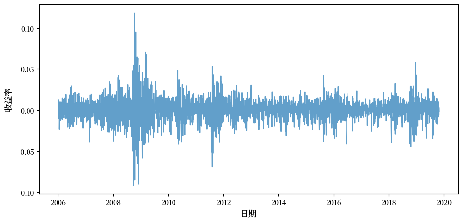
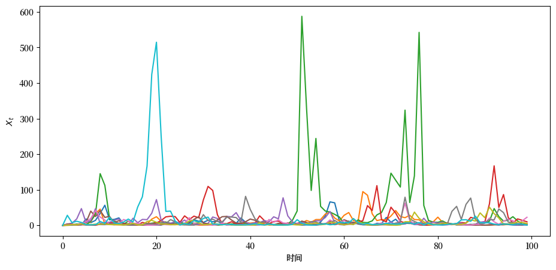
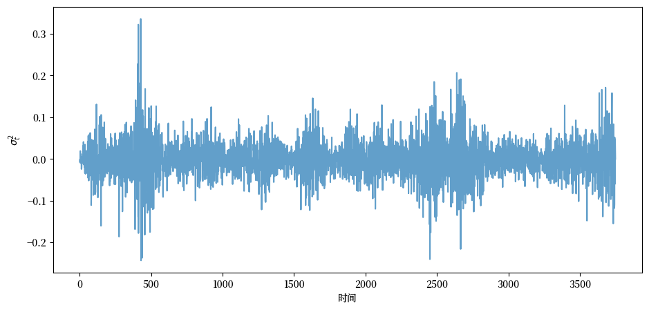
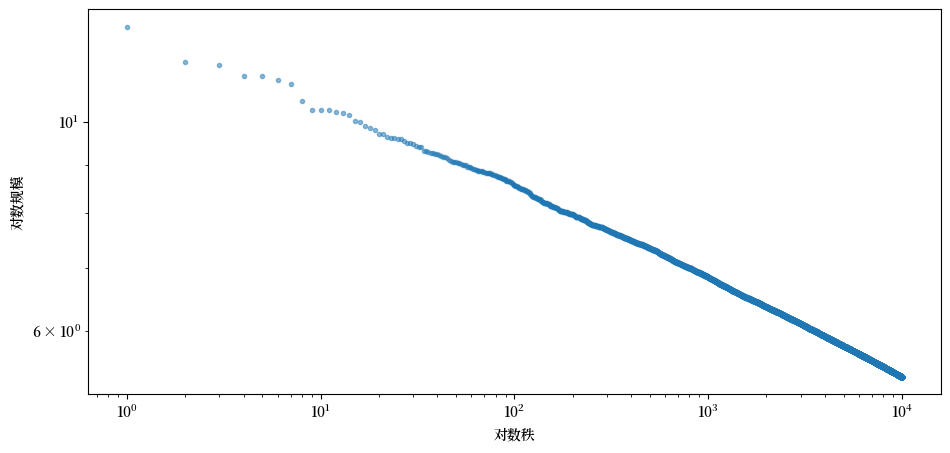

<!DOCTYPE html>


<html lang="en" data-content_root="" >

  <head>
    <meta charset="utf-8" />
    <meta name="viewport" content="width=device-width, initial-scale=1.0" /><meta name="generator" content="Docutils 0.17.1: http://docutils.sourceforge.net/" />

    <title>23. Kesten过程与企业动态 &#8212; Python中级数量经济学</title>
    <script src="https://unpkg.com/@popperjs/core@2.9.2/dist/umd/popper.min.js"></script>
    <script src="https://unpkg.com/tippy.js@6.3.1/dist/tippy-bundle.umd.js"></script>
    <script src="https://cdn.jsdelivr.net/npm/feather-icons/dist/feather.min.js"></script>
    
        <script>
            MathJax = {
            loader: {load: ['[tex]/boldsymbol', '[tex]/textmacros']},
            tex: {
                packages: {'[+]': ['boldsymbol', 'textmacros']},
                inlineMath: [['$', '$'], ['\\(', '\\)']],
                processEscapes: true,
                macros: {
                    "argmax" : "arg\\,max",
                    "argmin" : "arg\\,min",
                    "col"    : "col",
                    "Span"   :  "span",
                    "epsilon": "\\varepsilon",
                    "EE": "\\mathbb{E}",
                    "PP": "\\mathbb{P}",
                    "RR": "\\mathbb{R}",
                    "NN": "\\mathbb{N}",
                    "ZZ": "\\mathbb{Z}",
                    "aA": "\\mathcal{A}",
                    "bB": "\\mathcal{B}",
                    "cC": "\\mathcal{C}",
                    "dD": "\\mathcal{D}",
                    "eE": "\\mathcal{E}",
                    "fF": "\\mathcal{F}",
                    "gG": "\\mathcal{G}",
                    "hH": "\\mathcal{H}",
                }
            },
            svg: {
                fontCache: 'global',
                scale: 0.92,
                displayAlign: "center",
            },
            };
        </script>
    
    
  
  
  
  <script data-cfasync="false">
    document.documentElement.dataset.mode = localStorage.getItem("mode") || "";
    document.documentElement.dataset.theme = localStorage.getItem("theme") || "";
  </script>
  
  <!-- Loaded before other Sphinx assets -->
  <link href="_static/styles/theme.css?digest=dfe6caa3a7d634c4db9b" rel="stylesheet" />
<link href="_static/styles/bootstrap.css?digest=dfe6caa3a7d634c4db9b" rel="stylesheet" />
<link href="_static/styles/pydata-sphinx-theme.css?digest=dfe6caa3a7d634c4db9b" rel="stylesheet" />

  
  <link href="_static/vendor/fontawesome/6.5.2/css/all.min.css?digest=dfe6caa3a7d634c4db9b" rel="stylesheet" />
  <link rel="preload" as="font" type="font/woff2" crossorigin href="_static/vendor/fontawesome/6.5.2/webfonts/fa-solid-900.woff2" />
<link rel="preload" as="font" type="font/woff2" crossorigin href="_static/vendor/fontawesome/6.5.2/webfonts/fa-brands-400.woff2" />
<link rel="preload" as="font" type="font/woff2" crossorigin href="_static/vendor/fontawesome/6.5.2/webfonts/fa-regular-400.woff2" />

    <link rel="stylesheet" type="text/css" href="_static/pygments.css" />
    <link rel="stylesheet" href="_static/styles/quantecon-book-theme.css?digest=bd0785fbb14d8d2bd4d9ae501d79ed8d3bc089ec" type="text/css" />
    <link rel="stylesheet" type="text/css" href="_static/togglebutton.css" />
    <link rel="stylesheet" type="text/css" href="_static/copybutton.css" />
    <link rel="stylesheet" type="text/css" href="_static/mystnb.4510f1fc1dee50b3e5859aac5469c37c29e427902b24a333a5f9fcb2f0b3ac41.css" />
    <link rel="stylesheet" type="text/css" href="_static/sphinx-thebe.css" />
    <link rel="stylesheet" type="text/css" href="_static/exercise.css" />
    <link rel="stylesheet" type="text/css" href="_static/proof.css" />
    <link rel="stylesheet" type="text/css" href="_static/sphinx-design.5ea377869091fd0449014c60fc090103.min.css" />
  
  <!-- Pre-loaded scripts that we'll load fully later -->
  <link rel="preload" as="script" href="_static/scripts/bootstrap.js?digest=dfe6caa3a7d634c4db9b" />
<link rel="preload" as="script" href="_static/scripts/pydata-sphinx-theme.js?digest=dfe6caa3a7d634c4db9b" />
  <script src="_static/vendor/fontawesome/6.5.2/js/all.min.js?digest=dfe6caa3a7d634c4db9b"></script>


    <script data-url_root="./" id="documentation_options" src="_static/documentation_options.js"></script>
    <script src="_static/jquery.js"></script>
    <script src="_static/underscore.js"></script>
    <script src="_static/_sphinx_javascript_frameworks_compat.js"></script>
    <script src="_static/doctools.js"></script>
    <script src="_static/sphinx_highlight.js"></script>
    <script src="_static/clipboard.min.js"></script>
    <script src="_static/copybutton.js"></script>
    <script src="_static/scripts/sphinx-book-theme.js"></script>
    <script>let toggleHintShow = 'Click to show';</script>
    <script>let toggleHintHide = 'Click to hide';</script>
    <script>let toggleOpenOnPrint = 'true';</script>
    <script src="_static/togglebutton.js"></script>
    <script src="_static/scripts/quantecon-book-theme.js?digest=d9faaf6c4b57726f74ba012412af1f5681bdff87"></script>
    <script>var togglebuttonSelector = '.toggle, .admonition.dropdown';</script>
    <script src="_static/design-tabs.js"></script>
    <script async="async" src="https://www.googletagmanager.com/gtag/js?id=G-J0SMYR4SG3"></script>
    <script>
                window.dataLayer = window.dataLayer || [];
                function gtag(){ dataLayer.push(arguments); }
                gtag('js', new Date());
                gtag('config', 'G-J0SMYR4SG3');
            </script>
    <script>const THEBE_JS_URL = "https://unpkg.com/thebe@0.8.2/lib/index.js"; const thebe_selector = ".thebe,.cell"; const thebe_selector_input = "pre"; const thebe_selector_output = ".output, .cell_output"</script>
    <script async="async" src="_static/sphinx-thebe.js"></script>
    <script>window.MathJax = {"tex": {"macros": {"argmax": "arg\\,max", "argmin": "arg\\,min"}}, "options": {"processHtmlClass": "tex2jax_process|mathjax_process|math|output_area"}}</script>
    <script defer="defer" src="https://cdn.jsdelivr.net/npm/mathjax@3/es5/tex-mml-chtml.js"></script>
    <script>DOCUMENTATION_OPTIONS.pagename = 'kesten_processes';</script>
    <link rel="canonical" href="https://python.quantecon-zh-cn.org/kesten_processes.html" />
    <link rel="shortcut icon" href="_static/lectures-favicon.ico"/>
    <link rel="index" title="Index" href="genindex.html" />
    <link rel="search" title="Search" href="search.html" />
    <link rel="next" title="24. 财富分配动态" href="wealth_dynamics.html" />
    <link rel="prev" title="22. 萨缪尔森乘数-加速器模型" href="samuelson.html" />

<!-- Normal Meta Tags -->
<meta name="author" context="Thomas J. Sargent &amp; John Stachurski" />
<meta name="keywords" content="Python, QuantEcon, Quantitative Economics, Economics, Sloan, Alfred P. Sloan Foundation, Tom J. Sargent, John Stachurski" />
<meta name="description" content=本课程是由托马斯·萨金特（Thomas J. Sargent）和约翰·斯塔胡斯基（John Stachurski）设计和编写的数量经济建模讲座。 />

<!-- Twitter tags -->
<meta name="twitter:card" content="summary" />
<meta name="twitter:site" content="@quantecon" />
<meta name="twitter:title" content="Kesten过程与企业动态"/>
<meta name="twitter:description" content="本课程是由托马斯·萨金特（Thomas J. Sargent）和约翰·斯塔胡斯基（John Stachurski）设计和编写的数量经济建模讲座。">
<meta name="twitter:creator" content="@quantecon">
<meta name="twitter:image" content="https://assets.quantecon.org/img/qe-twitter-logo.png">

<!-- Opengraph tags -->
<meta property="og:title" content="Kesten过程与企业动态" />
<meta property="og:type" content="website" />
<meta property="og:url" content="https://python.quantecon-zh-cn.org/kesten_processes.html" />
<meta property="og:image" content="https://assets.quantecon.org/img/qe-og-logo.png" />
<meta property="og:description" content="本课程是由托马斯·萨金特（Thomas J. Sargent）和约翰·斯塔胡斯基（John Stachurski）设计和编写的数量经济建模讲座。" />
<meta property="og:site_name" content="Python中级数量经济学" />
<meta name="theme-color" content="#ffffff" />

  </head>
<body>

<!-- Override QuantEcon theme colors -->

    <span id="top"></span>

    <div class="qe-wrapper">

        <div class="qe-main">

            <div class="qe-page" id=kesten_processes>

                <div class="qe-page__toc">

                    <div class="inner">

                        
                        <div class="qe-page__toc-header">
                            On this page
                        </div>


                        <nav id="bd-toc-nav" class="qe-page__toc-nav">
                            <ul class="visible nav section-nav flex-column">
<li class="toc-h2 nav-item toc-entry"><a class="reference internal nav-link" href="#id1">23.1. 概述</a></li>
<li class="toc-h2 nav-item toc-entry"><a class="reference internal nav-link" href="#id3">23.2. Kesten过程</a><ul class="nav section-nav flex-column">
<li class="toc-h3 nav-item toc-entry"><a class="reference internal nav-link" href="#garch">23.2.1. 示例：GARCH波动率</a></li>
<li class="toc-h3 nav-item toc-entry"><a class="reference internal nav-link" href="#id4">23.2.2. 示例：财富动态</a></li>
<li class="toc-h3 nav-item toc-entry"><a class="reference internal nav-link" href="#id5">23.2.3. 平稳性</a></li>
<li class="toc-h3 nav-item toc-entry"><a class="reference internal nav-link" href="#id6">23.2.4. 横截面解释</a></li>
<li class="toc-h3 nav-item toc-entry"><a class="reference internal nav-link" href="#id7">23.2.5. 平稳性条件</a></li>
</ul>
</li>
<li class="toc-h2 nav-item toc-entry"><a class="reference internal nav-link" href="#id9">23.3. 重尾</a><ul class="nav section-nav flex-column">
<li class="toc-h3 nav-item toc-entry"><a class="reference internal nav-link" href="#kestengoldie">23.3.1. Kesten–Goldie定理</a></li>
<li class="toc-h3 nav-item toc-entry"><a class="reference internal nav-link" href="#id11">23.3.2. 直觉解释</a></li>
</ul>
</li>
<li class="toc-h2 nav-item toc-entry"><a class="reference internal nav-link" href="#id12">23.4. 应用：企业动态</a><ul class="nav section-nav flex-column">
<li class="toc-h3 nav-item toc-entry"><a class="reference internal nav-link" href="#gibrat">23.4.1. Gibrat定律</a></li>
<li class="toc-h3 nav-item toc-entry"><a class="reference internal nav-link" href="#id20">23.4.2. 重尾</a></li>
</ul>
</li>
<li class="toc-h2 nav-item toc-entry"><a class="reference internal nav-link" href="#id21">23.5. 练习</a></li>
</ul>
                            <p class="logo">
                                
                                    
                                    <a href=https://quantecon.org></a>
                                    
                                    
                                
                            </p>

                            <p class="powered">Powered by <a href="https://jupyterbook.org/">Jupyter Book</a></p>

                        </nav>

                        <div class="qe-page__toc-footer">
                            
                            
                            <p><a href="#top"><strong>Back to top</strong></a></p>
                        </div>

                    </div>

                </div>

                <div class="qe-page__header">

                    <div class="qe-page__header-copy">

                        <p class="qe-page__header-heading"><a href="intro.html">Python中级数量经济学</a></p>

                        <p class="qe-page__header-subheading">Kesten过程与企业动态</p>

                    </div>
                    <!-- length 2, since its a string and empty dict has length 2 - {} -->
                        <p class="qe-page__header-authors" font-size="18">
                            
                                
                                    <a href="http://www.tomsargent.com/" target="_blank"><span>托马斯·萨金特（Thomas J. Sargent）</span></a>
                                
                            
                                
                                    and <a href="https://johnstachurski.net/" target="_blank"><span>约翰·斯塔胡斯基（John Stachurski）</span></a>
                                
                            
                        </p>


                </div> <!-- .page__header -->


                
                <main class="qe-page__content" role="main">
                    
                    <div>
                        
  <section class="tex2jax_ignore mathjax_ignore" id="kesten">
<h1><a class="toc-backref" href="#id23"><span class="section-number">23. </span>Kesten过程与企业动态</a><a class="headerlink" href="#kesten" title="Permalink to this heading">#</a></h1>
<div class="contents topic" id="contents">
<span id="index-0"></span><p class="topic-title">Contents</p>
<ul class="simple">
<li><p><a class="reference internal" href="#kesten" id="id23">Kesten过程与企业动态</a></p>
<ul>
<li><p><a class="reference internal" href="#id1" id="id24">概述</a></p></li>
<li><p><a class="reference internal" href="#id3" id="id25">Kesten过程</a></p></li>
<li><p><a class="reference internal" href="#id9" id="id26">重尾</a></p></li>
<li><p><a class="reference internal" href="#id12" id="id27">应用：企业动态</a></p></li>
<li><p><a class="reference internal" href="#id21" id="id28">练习</a></p></li>
</ul>
</li>
</ul>
</div>
<p>除了Anaconda中包含的内容外，本讲座还需要以下库：</p>
<div class="cell tag_hide-output docutils container">
<div class="cell_input above-output-prompt docutils container">
<div class="highlight-ipython3 notranslate"><div class="highlight"><pre><span></span><span class="o">!</span>pip<span class="w"> </span>install<span class="w"> </span>quantecon
<span class="o">!</span>pip<span class="w"> </span>install<span class="w"> </span>--upgrade<span class="w"> </span>yfinance
</pre></div>
</div>
</div>
<details class="hide below-input">
<summary aria-label="Toggle hidden content">
<span class="collapsed">Show code cell output</span>
<span class="expanded">Hide code cell output</span>
</summary>
<div class="cell_output docutils container">
<div class="output stream highlight-myst-ansi notranslate"><div class="highlight"><pre><span></span>Requirement already satisfied: quantecon in /home/runner/miniconda3/envs/quantecon/lib/python3.12/site-packages (0.8.0)
Requirement already satisfied: numba&gt;=0.49.0 in /home/runner/miniconda3/envs/quantecon/lib/python3.12/site-packages (from quantecon) (0.60.0)
Requirement already satisfied: numpy&gt;=1.17.0 in /home/runner/miniconda3/envs/quantecon/lib/python3.12/site-packages (from quantecon) (1.26.4)
Requirement already satisfied: requests in /home/runner/miniconda3/envs/quantecon/lib/python3.12/site-packages (from quantecon) (2.32.3)
Requirement already satisfied: scipy&gt;=1.5.0 in /home/runner/miniconda3/envs/quantecon/lib/python3.12/site-packages (from quantecon) (1.13.1)
Requirement already satisfied: sympy in /home/runner/miniconda3/envs/quantecon/lib/python3.12/site-packages (from quantecon) (1.14.0)
Requirement already satisfied: llvmlite&lt;0.44,&gt;=0.43.0dev0 in /home/runner/miniconda3/envs/quantecon/lib/python3.12/site-packages (from numba&gt;=0.49.0-&gt;quantecon) (0.43.0)
Requirement already satisfied: charset-normalizer&lt;4,&gt;=2 in /home/runner/miniconda3/envs/quantecon/lib/python3.12/site-packages (from requests-&gt;quantecon) (3.3.2)
Requirement already satisfied: idna&lt;4,&gt;=2.5 in /home/runner/miniconda3/envs/quantecon/lib/python3.12/site-packages (from requests-&gt;quantecon) (3.7)
Requirement already satisfied: urllib3&lt;3,&gt;=1.21.1 in /home/runner/miniconda3/envs/quantecon/lib/python3.12/site-packages (from requests-&gt;quantecon) (2.2.3)
Requirement already satisfied: certifi&gt;=2017.4.17 in /home/runner/miniconda3/envs/quantecon/lib/python3.12/site-packages (from requests-&gt;quantecon) (2024.8.30)
Requirement already satisfied: mpmath&lt;1.4,&gt;=1.1.0 in /home/runner/miniconda3/envs/quantecon/lib/python3.12/site-packages (from sympy-&gt;quantecon) (1.3.0)
</pre></div>
</div>
<div class="output stream highlight-myst-ansi notranslate"><div class="highlight"><pre><span></span>Collecting yfinance
</pre></div>
</div>
<div class="output stream highlight-myst-ansi notranslate"><div class="highlight"><pre><span></span>  Downloading yfinance-0.2.61-py2.py3-none-any.whl.metadata (5.8 kB)
Requirement already satisfied: pandas&gt;=1.3.0 in /home/runner/miniconda3/envs/quantecon/lib/python3.12/site-packages (from yfinance) (2.2.2)
Requirement already satisfied: numpy&gt;=1.16.5 in /home/runner/miniconda3/envs/quantecon/lib/python3.12/site-packages (from yfinance) (1.26.4)
Requirement already satisfied: requests&gt;=2.31 in /home/runner/miniconda3/envs/quantecon/lib/python3.12/site-packages (from yfinance) (2.32.3)
Collecting multitasking&gt;=0.0.7 (from yfinance)
  Downloading multitasking-0.0.11-py3-none-any.whl.metadata (5.5 kB)
Requirement already satisfied: platformdirs&gt;=2.0.0 in /home/runner/miniconda3/envs/quantecon/lib/python3.12/site-packages (from yfinance) (3.10.0)
Requirement already satisfied: pytz&gt;=2022.5 in /home/runner/miniconda3/envs/quantecon/lib/python3.12/site-packages (from yfinance) (2024.1)
</pre></div>
</div>
<div class="output stream highlight-myst-ansi notranslate"><div class="highlight"><pre><span></span>Collecting frozendict&gt;=2.3.4 (from yfinance)
  Downloading frozendict-2.4.6-py312-none-any.whl.metadata (23 kB)
Collecting peewee&gt;=3.16.2 (from yfinance)
  Downloading peewee-3.18.1.tar.gz (3.0 MB)
?25l     ━━━━━━━━━━━━━━━━━━━━━━━━━━━━━━━━━━━━━━━━ <span class=" -Color -Color-Green">0.0/3.0 MB</span> <span class=" -Color -Color-Red">?</span> eta <span class=" -Color -Color-Cyan">-:--:--</span>
</pre></div>
</div>
<div class="output stream highlight-myst-ansi notranslate"><div class="highlight"><pre><span></span>     ━━━━━━━━━━━━━━━━━━━━━━━━━━━━━━━━━━━━━━━━ <span class=" -Color -Color-Green">3.0/3.0 MB</span> <span class=" -Color -Color-Red">97.3 MB/s</span> eta <span class=" -Color -Color-Cyan">0:00:00</span>
?25h
</pre></div>
</div>
<div class="output stream highlight-myst-ansi notranslate"><div class="highlight"><pre><span></span>  Installing build dependencies ... ?25l-
</pre></div>
</div>
<div class="output stream highlight-myst-ansi notranslate"><div class="highlight"><pre><span></span> \
</pre></div>
</div>
<div class="output stream highlight-myst-ansi notranslate"><div class="highlight"><pre><span></span> |
</pre></div>
</div>
<div class="output stream highlight-myst-ansi notranslate"><div class="highlight"><pre><span></span> done
</pre></div>
</div>
<div class="output stream highlight-myst-ansi notranslate"><div class="highlight"><pre><span></span>?25h  Getting requirements to build wheel ... ?25l-
</pre></div>
</div>
<div class="output stream highlight-myst-ansi notranslate"><div class="highlight"><pre><span></span> done
</pre></div>
</div>
<div class="output stream highlight-myst-ansi notranslate"><div class="highlight"><pre><span></span>?25h  Preparing metadata (pyproject.toml) ... ?25l-
</pre></div>
</div>
<div class="output stream highlight-myst-ansi notranslate"><div class="highlight"><pre><span></span> done
?25hRequirement already satisfied: beautifulsoup4&gt;=4.11.1 in /home/runner/miniconda3/envs/quantecon/lib/python3.12/site-packages (from yfinance) (4.12.3)
</pre></div>
</div>
<div class="output stream highlight-myst-ansi notranslate"><div class="highlight"><pre><span></span>Collecting curl_cffi&gt;=0.7 (from yfinance)
  Downloading curl_cffi-0.11.1-cp39-abi3-manylinux_2_17_x86_64.manylinux2014_x86_64.whl.metadata (14 kB)
Requirement already satisfied: protobuf&gt;=3.19.0 in /home/runner/miniconda3/envs/quantecon/lib/python3.12/site-packages (from yfinance) (4.25.3)
</pre></div>
</div>
<div class="output stream highlight-myst-ansi notranslate"><div class="highlight"><pre><span></span>Collecting websockets&gt;=13.0 (from yfinance)
  Downloading websockets-15.0.1-cp312-cp312-manylinux_2_5_x86_64.manylinux1_x86_64.manylinux_2_17_x86_64.manylinux2014_x86_64.whl.metadata (6.8 kB)
Requirement already satisfied: soupsieve&gt;1.2 in /home/runner/miniconda3/envs/quantecon/lib/python3.12/site-packages (from beautifulsoup4&gt;=4.11.1-&gt;yfinance) (2.5)
Requirement already satisfied: cffi&gt;=1.12.0 in /home/runner/miniconda3/envs/quantecon/lib/python3.12/site-packages (from curl_cffi&gt;=0.7-&gt;yfinance) (1.17.1)
Requirement already satisfied: certifi&gt;=2024.2.2 in /home/runner/miniconda3/envs/quantecon/lib/python3.12/site-packages (from curl_cffi&gt;=0.7-&gt;yfinance) (2024.8.30)
Requirement already satisfied: python-dateutil&gt;=2.8.2 in /home/runner/miniconda3/envs/quantecon/lib/python3.12/site-packages (from pandas&gt;=1.3.0-&gt;yfinance) (2.9.0.post0)
Requirement already satisfied: tzdata&gt;=2022.7 in /home/runner/miniconda3/envs/quantecon/lib/python3.12/site-packages (from pandas&gt;=1.3.0-&gt;yfinance) (2023.3)
Requirement already satisfied: charset-normalizer&lt;4,&gt;=2 in /home/runner/miniconda3/envs/quantecon/lib/python3.12/site-packages (from requests&gt;=2.31-&gt;yfinance) (3.3.2)
Requirement already satisfied: idna&lt;4,&gt;=2.5 in /home/runner/miniconda3/envs/quantecon/lib/python3.12/site-packages (from requests&gt;=2.31-&gt;yfinance) (3.7)
Requirement already satisfied: urllib3&lt;3,&gt;=1.21.1 in /home/runner/miniconda3/envs/quantecon/lib/python3.12/site-packages (from requests&gt;=2.31-&gt;yfinance) (2.2.3)
Requirement already satisfied: pycparser in /home/runner/miniconda3/envs/quantecon/lib/python3.12/site-packages (from cffi&gt;=1.12.0-&gt;curl_cffi&gt;=0.7-&gt;yfinance) (2.21)
Requirement already satisfied: six&gt;=1.5 in /home/runner/miniconda3/envs/quantecon/lib/python3.12/site-packages (from python-dateutil&gt;=2.8.2-&gt;pandas&gt;=1.3.0-&gt;yfinance) (1.16.0)
Downloading yfinance-0.2.61-py2.py3-none-any.whl (117 kB)
Downloading curl_cffi-0.11.1-cp39-abi3-manylinux_2_17_x86_64.manylinux2014_x86_64.whl (8.5 MB)
?25l   ━━━━━━━━━━━━━━━━━━━━━━━━━━━━━━━━━━━━━━━━ <span class=" -Color -Color-Green">0.0/8.5 MB</span> <span class=" -Color -Color-Red">?</span> eta <span class=" -Color -Color-Cyan">-:--:--</span>
</pre></div>
</div>
<div class="output stream highlight-myst-ansi notranslate"><div class="highlight"><pre><span></span>   ━━━━━━━━━━━━━━━━━━━━━━━━━━━━━━━━━━━━━━━━ <span class=" -Color -Color-Green">8.5/8.5 MB</span> <span class=" -Color -Color-Red">160.2 MB/s</span> eta <span class=" -Color -Color-Cyan">0:00:00</span>
?25h
</pre></div>
</div>
<div class="output stream highlight-myst-ansi notranslate"><div class="highlight"><pre><span></span>Downloading frozendict-2.4.6-py312-none-any.whl (16 kB)
Downloading multitasking-0.0.11-py3-none-any.whl (8.5 kB)
Downloading websockets-15.0.1-cp312-cp312-manylinux_2_5_x86_64.manylinux1_x86_64.manylinux_2_17_x86_64.manylinux2014_x86_64.whl (182 kB)
Building wheels for collected packages: peewee
</pre></div>
</div>
<div class="output stream highlight-myst-ansi notranslate"><div class="highlight"><pre><span></span>  Building wheel for peewee (pyproject.toml) ... ?25l-
</pre></div>
</div>
<div class="output stream highlight-myst-ansi notranslate"><div class="highlight"><pre><span></span> \
</pre></div>
</div>
<div class="output stream highlight-myst-ansi notranslate"><div class="highlight"><pre><span></span> |
</pre></div>
</div>
<div class="output stream highlight-myst-ansi notranslate"><div class="highlight"><pre><span></span> done
?25h  Created wheel for peewee: filename=peewee-3.18.1-cp312-cp312-linux_x86_64.whl size=303844 sha256=200b295899b83dc884ecf9b41531021fb6f91b2f98d558c05a6dc62cdf346b84
  Stored in directory: /home/runner/.cache/pip/wheels/1a/57/6a/bb71346381d0d911cd4ce3026f1fa720da76707e4f01cf27dd
Successfully built peewee
</pre></div>
</div>
<div class="output stream highlight-myst-ansi notranslate"><div class="highlight"><pre><span></span>Installing collected packages: peewee, multitasking, websockets, frozendict, curl_cffi, yfinance
</pre></div>
</div>
<div class="output stream highlight-myst-ansi notranslate"><div class="highlight"><pre><span></span>Successfully installed curl_cffi-0.11.1 frozendict-2.4.6 multitasking-0.0.11 peewee-3.18.1 websockets-15.0.1 yfinance-0.2.61
</pre></div>
</div>
</div>
</details>
</div>
<section id="id1">
<h2><a class="toc-backref" href="#id24"><span class="section-number">23.1. </span>概述</a><a class="headerlink" href="#id1" title="Permalink to this heading">#</a></h2>
<p><a class="reference external" href="https://quantecon.github.io/lecture-intro.zh-cn/ar1_processes.html" title="(in Python)"><span class="xref std std-doc">之前</span></a> 我们学习了线性标量值随机过程（AR(1)模型）。</p>
<p>现在，我们将进一步推广这些线性模型，允许乘法系数具有随机性。</p>
<p>这些过程被称为Kesten过程，以德裔美国数学家Harry Kesten（1931-2019）的名字命名。</p>
<p>虽然Kesten过程的数学形式看起来很简单，但它们在经济学中非常重要，主要有两个原因：</p>
<ol class="arabic simple">
<li><p>很多关键的经济过程可以用Kesten过程来描述。</p></li>
<li><p>Kesten过程能够产生复杂的动态行为，尤其是在某些条件下，它们可以生成带有”重尾”特征的横截面分布，这与我们在现实经济数据中观察到的情况相符。</p></li>
</ol>
<p>我们接下来会讨论这些问题。</p>
<p>现在我们从一些导入开始：</p>
<div class="cell docutils container">
<div class="cell_input docutils container">
<div class="highlight-ipython3 notranslate"><div class="highlight"><pre><span></span><span class="kn">import</span> <span class="nn">matplotlib.pyplot</span> <span class="k">as</span> <span class="nn">plt</span>
<span class="kn">import</span> <span class="nn">matplotlib</span> <span class="k">as</span> <span class="nn">mpl</span>
<span class="n">FONTPATH</span> <span class="o">=</span> <span class="s2">&quot;fonts/SourceHanSerifSC-SemiBold.otf&quot;</span>
<span class="n">mpl</span><span class="o">.</span><span class="n">font_manager</span><span class="o">.</span><span class="n">fontManager</span><span class="o">.</span><span class="n">addfont</span><span class="p">(</span><span class="n">FONTPATH</span><span class="p">)</span>
<span class="n">plt</span><span class="o">.</span><span class="n">rcParams</span><span class="p">[</span><span class="s1">&#39;font.family&#39;</span><span class="p">]</span> <span class="o">=</span> <span class="p">[</span><span class="s1">&#39;Source Han Serif SC&#39;</span><span class="p">]</span>

<span class="n">plt</span><span class="o">.</span><span class="n">rcParams</span><span class="p">[</span><span class="s2">&quot;figure.figsize&quot;</span><span class="p">]</span> <span class="o">=</span> <span class="p">(</span><span class="mi">11</span><span class="p">,</span> <span class="mi">5</span><span class="p">)</span>  <span class="c1">#设置默认图形大小</span>
<span class="kn">import</span> <span class="nn">numpy</span> <span class="k">as</span> <span class="nn">np</span>
<span class="kn">import</span> <span class="nn">quantecon</span> <span class="k">as</span> <span class="nn">qe</span>
</pre></div>
</div>
</div>
</div>
<p>以下两行仅用于避免pandas和matplotlib之间的兼容性问题导致的<code class="docutils literal notranslate"><span class="pre">FutureWarning</span></code>。</p>
<div class="cell docutils container">
<div class="cell_input docutils container">
<div class="highlight-ipython3 notranslate"><div class="highlight"><pre><span></span><span class="kn">from</span> <span class="nn">pandas.plotting</span> <span class="kn">import</span> <span class="n">register_matplotlib_converters</span>
<span class="n">register_matplotlib_converters</span><span class="p">()</span>
</pre></div>
</div>
</div>
</div>
<p>关于本讲座的更多技术细节，读者可以参考<span id="id2">[<a class="reference internal" href="zreferences.html#id59" title="Dariusz Buraczewski, Ewa Damek, Thomas Mikosch, and others. Stochastic models with power-law tails. Springer, 2016.">Buraczewski <em>et al.</em>, 2016</a>]</span>这本专著。</p>
</section>
<section id="id3">
<h2><a class="toc-backref" href="#id25"><span class="section-number">23.2. </span>Kesten过程</a><a class="headerlink" href="#id3" title="Permalink to this heading">#</a></h2>
<p id="index-1"><strong>Kesten过程</strong>是一种形式如下的随机过程：</p>
<div class="math notranslate nohighlight" id="equation-kesproc">
<span class="eqno">(23.1)<a class="headerlink" href="#equation-kesproc" title="Permalink to this equation">#</a></span>\[X_{t+1} = a_{t+1} X_t + \eta_{t+1}\]</div>
<p>其中<span class="math notranslate nohighlight">\(\{a_t\}_{t \geq 1}\)</span>和<span class="math notranslate nohighlight">\(\{\eta_t\}_{t \geq 1}\)</span>是独立同分布序列。</p>
<p>我们感兴趣的是当<span class="math notranslate nohighlight">\(X_0\)</span>给定时<span class="math notranslate nohighlight">\(\{X_t\}_{t \geq 0}\)</span>的动态变化。</p>
<p>我们将重点关注非负标量的情况，其中<span class="math notranslate nohighlight">\(X_t\)</span>的取值范围为<span class="math notranslate nohighlight">\(\mathbb R_+\)</span>。</p>
<p>特别地，我们假设：</p>
<ul class="simple">
<li><p>初始条件<span class="math notranslate nohighlight">\(X_0\)</span>是非负的，</p></li>
<li><p><span class="math notranslate nohighlight">\(\{a_t\}_{t \geq 1}\)</span>是非负的独立同分布随机过程，且</p></li>
<li><p><span class="math notranslate nohighlight">\(\{\eta_t\}_{t \geq 1}\)</span>是另一个非负的独立同分布随机过程，并与第一个过程相互独立。</p></li>
</ul>
<section id="garch">
<h3><span class="section-number">23.2.1. </span>示例：GARCH波动率<a class="headerlink" href="#garch" title="Permalink to this heading">#</a></h3>
<p>GARCH模型在金融应用中很常见，其中时间序列（如资产收益）表现出时变波动率。</p>
<p>例如，考虑以下纳斯达克综合指数从2006年1月1日到2019年11月1日的日收益率图。</p>
<div class="cell docutils container" id="ndcode">
<div class="cell_input docutils container">
<div class="highlight-ipython3 notranslate"><div class="highlight"><pre><span></span><span class="kn">import</span> <span class="nn">yfinance</span> <span class="k">as</span> <span class="nn">yf</span>

<span class="n">s</span> <span class="o">=</span> <span class="n">yf</span><span class="o">.</span><span class="n">download</span><span class="p">(</span><span class="s1">&#39;^IXIC&#39;</span><span class="p">,</span> <span class="s1">&#39;2006-1-1&#39;</span><span class="p">,</span> <span class="s1">&#39;2019-11-1&#39;</span><span class="p">,</span> <span class="n">auto_adjust</span><span class="o">=</span><span class="kc">False</span><span class="p">)[</span><span class="s1">&#39;Adj Close&#39;</span><span class="p">]</span>

<span class="n">r</span> <span class="o">=</span> <span class="n">s</span><span class="o">.</span><span class="n">pct_change</span><span class="p">()</span>

<span class="n">fig</span><span class="p">,</span> <span class="n">ax</span> <span class="o">=</span> <span class="n">plt</span><span class="o">.</span><span class="n">subplots</span><span class="p">()</span>

<span class="n">ax</span><span class="o">.</span><span class="n">plot</span><span class="p">(</span><span class="n">r</span><span class="p">,</span> <span class="n">alpha</span><span class="o">=</span><span class="mf">0.7</span><span class="p">)</span>

<span class="n">ax</span><span class="o">.</span><span class="n">set_ylabel</span><span class="p">(</span><span class="s1">&#39;收益率&#39;</span><span class="p">,</span> <span class="n">fontsize</span><span class="o">=</span><span class="mi">12</span><span class="p">)</span>
<span class="n">ax</span><span class="o">.</span><span class="n">set_xlabel</span><span class="p">(</span><span class="s1">&#39;日期&#39;</span><span class="p">,</span> <span class="n">fontsize</span><span class="o">=</span><span class="mi">12</span><span class="p">)</span>

<span class="n">plt</span><span class="o">.</span><span class="n">show</span><span class="p">()</span>
</pre></div>
</div>
</div>
<div class="cell_output docutils container">
<div class="output stderr highlight-myst-ansi notranslate"><div class="highlight"><pre><span></span>[*********************100%***********************]  1 of 1 completed
</pre></div>
</div>
<div class="output stderr highlight-myst-ansi notranslate"><div class="highlight"><pre><span></span>
</pre></div>
</div>

</div>
</div>
<p>注意该序列如何呈现出波动率爆发（高方差），随后又趋于平稳。</p>
<p>GARCH模型可以复现这一特征。</p>
<p>GARCH(1, 1)波动率过程的形式如下：</p>
<div class="math notranslate nohighlight" id="equation-garch11v">
<span class="eqno">(23.2)<a class="headerlink" href="#equation-garch11v" title="Permalink to this equation">#</a></span>\[\sigma_{t+1}^2 = \alpha_0 + \sigma_t^2 (\alpha_1 \xi_{t+1}^2 + \beta)\]</div>
<p>其中<span class="math notranslate nohighlight">\(\{\xi_t\}\)</span>是独立同分布的，<span class="math notranslate nohighlight">\(\mathbb E \xi_t^2 = 1\)</span>且所有参数都是正的。</p>
<p>给定资产的收益率可建模为：</p>
<div class="math notranslate nohighlight" id="equation-garch11r">
<span class="eqno">(23.3)<a class="headerlink" href="#equation-garch11r" title="Permalink to this equation">#</a></span>\[r_t = \sigma_t \zeta_t\]</div>
<p>其中<span class="math notranslate nohighlight">\(\{\zeta_t\}\)</span>也是独立同分布的，且与<span class="math notranslate nohighlight">\(\{\xi_t\}\)</span>相互独立。</p>
<p>驱动收益率动态变化的波动率序列<span class="math notranslate nohighlight">\(\{\sigma_t^2 \}\)</span>是一个Kesten过程。</p>
</section>
<section id="id4">
<h3><span class="section-number">23.2.2. </span>示例：财富动态<a class="headerlink" href="#id4" title="Permalink to this heading">#</a></h3>
<p>假设某个家庭在每一期都将其当前财富按固定比例<span class="math notranslate nohighlight">\(s\)</span>进行储蓄。</p>
<p>该家庭在时期<span class="math notranslate nohighlight">\(t\)</span>开始时获得劳动收入<span class="math notranslate nohighlight">\(y_t\)</span>。</p>
<p>其财富则按照以下方式演化：</p>
<div class="math notranslate nohighlight" id="equation-wealth-dynam">
<span class="eqno">(23.4)<a class="headerlink" href="#equation-wealth-dynam" title="Permalink to this equation">#</a></span>\[w_{t+1} = R_{t+1} s w_t  + y_{t+1}\]</div>
<p>其中<span class="math notranslate nohighlight">\(\{R_t\}\)</span>是资产的总收益率。</p>
<p>如果<span class="math notranslate nohighlight">\(\{R_t\}\)</span>和<span class="math notranslate nohighlight">\(\{y_t\}\)</span>都是独立同分布的，那么<a class="reference internal" href="#equation-wealth-dynam">(23.4)</a>就是一个Kesten过程。</p>
</section>
<section id="id5">
<h3><span class="section-number">23.2.3. </span>平稳性<a class="headerlink" href="#id5" title="Permalink to this heading">#</a></h3>
<p>在之前的讲座中，如<a class="reference external" href="https://quantecon.github.io/lecture-intro.zh-cn/ar1_processes.html" title="(in Python)"><span class="xref std std-doc">AR(1)过程</span></a>，我们引入了平稳分布的概念。</p>
<p>在当前背景下，我们可以这样定义一个平稳分布：</p>
<p>对于Kesten过程<a class="reference internal" href="#equation-kesproc">(23.1)</a>，若满足</p>
<div class="math notranslate nohighlight" id="equation-kp-stationary0">
<span class="eqno">(23.5)<a class="headerlink" href="#equation-kp-stationary0" title="Permalink to this equation">#</a></span>\[X_t \sim F^*
\quad \implies \quad
a_{t+1} X_t + \eta_{t+1} \sim F^*\]</div>
<p>则定义在<span class="math notranslate nohighlight">\(\mathbb R\)</span>上的分布<span class="math notranslate nohighlight">\(F^*\)</span>被称为该过程的<strong>平稳分布</strong>。</p>
<p>换句话说，如果当前状态<span class="math notranslate nohighlight">\(X_t\)</span>服从分布<span class="math notranslate nohighlight">\(F^*\)</span>，那么下一期状态<span class="math notranslate nohighlight">\(X_{t+1}\)</span>也服从相同的分布<span class="math notranslate nohighlight">\(F^*\)</span>。</p>
<p>我们可以将其等价写为：</p>
<div class="math notranslate nohighlight" id="equation-kp-stationary">
<span class="eqno">(23.6)<a class="headerlink" href="#equation-kp-stationary" title="Permalink to this equation">#</a></span>\[F^*(y) = \int \mathbb P\{ a_{t+1} x + \eta_{t+1} \leq y\} F^*(dx)
\quad \text{对所有 } y \geq 0 \text{成立 }\]</div>
<p>式子左边是当前状态服从<span class="math notranslate nohighlight">\(F^*\)</span>时，下一期状态的分布。</p>
<p><a class="reference internal" href="#equation-kp-stationary">(23.6)</a>这一等式表明这个分布保持不变。</p>
</section>
<section id="id6">
<h3><span class="section-number">23.2.4. </span>横截面解释<a class="headerlink" href="#id6" title="Permalink to this heading">#</a></h3>
<p>平稳分布具有重要的横截面解释，之前我们已经讨论过，但仍值得在这里重复。</p>
<p>例如，假设我们对财富分布（某个国家当前家庭财富的分布）感兴趣。</p>
<p>进一步的假设：</p>
<ul class="simple">
<li><p>每个家庭的财富根据<a class="reference internal" href="#equation-wealth-dynam">(23.4)</a>独立演化；</p></li>
<li><p><span class="math notranslate nohighlight">\(F^*\)</span>是这个随机过程的平稳分布；</p></li>
<li><p>存在大量家庭。</p></li>
</ul>
<p>那么，<span class="math notranslate nohighlight">\(F^*\)</span>就是这个国家横截面财富分布的稳态。</p>
<p>换句话说，如果<span class="math notranslate nohighlight">\(F^*\)</span>是当前的财富分布，则在<em>其他条件不变</em>的情况下，其在后续时期将保持这一分布不变。</p>
<p>要理解这一点，假设<span class="math notranslate nohighlight">\(F^*\)</span>是当前的财富分布。</p>
<p>下一期财富小于<span class="math notranslate nohighlight">\(y\)</span>的家庭比例是多少？</p>
<p>为了得到这一比例，我们对明天的财富小于<span class="math notranslate nohighlight">\(y\)</span>的概率进行求和，给定条件为当前财富为<span class="math notranslate nohighlight">\(w\)</span>，按拥有财富<span class="math notranslate nohighlight">\(w\)</span>的家庭比例进行加权。</p>
<p>注意到财富在区间<span class="math notranslate nohighlight">\(dw\)</span>中的家庭比例是<span class="math notranslate nohighlight">\(F^*(dw)\)</span>，我们得到：</p>
<div class="math notranslate nohighlight">
\[
\int \mathbb P\{ R_{t+1} s w  + y_{t+1} \leq y\} F^*(dw)
\]</div>
<p>根据平稳性的定义和<span class="math notranslate nohighlight">\(F^*\)</span>是财富过程的平稳分布的假设，上述积分结果为<span class="math notranslate nohighlight">\(F^*(y)\)</span>。</p>
<p>因此，下一期中财富在<span class="math notranslate nohighlight">\([0, y]\)</span>内的家庭比例与当前期相同。</p>
<p>由于<span class="math notranslate nohighlight">\(y\)</span>是任意选择的，财富分布保持不变。</p>
</section>
<section id="id7">
<h3><span class="section-number">23.2.5. </span>平稳性条件<a class="headerlink" href="#id7" title="Permalink to this heading">#</a></h3>
<p>Kesten过程<span class="math notranslate nohighlight">\(X_{t+1} = a_{t+1} X_t + \eta_{t+1}\)</span>并不总是具有平稳分布。</p>
<p>例如，如果对所有<span class="math notranslate nohighlight">\(t\)</span>都有<span class="math notranslate nohighlight">\(a_t \equiv \eta_t \equiv 1\)</span>，那么<span class="math notranslate nohighlight">\(X_t = X_0 + t\)</span>，此时序列会发散到无穷大。</p>
<p>为了防止这种发散，我们要求<span class="math notranslate nohighlight">\(\{a_t\}\)</span>在大多数情况下严格小于1。</p>
<p>特别地，如果：</p>
<div class="math notranslate nohighlight" id="equation-kp-stat-cond">
<span class="eqno">(23.7)<a class="headerlink" href="#equation-kp-stat-cond" title="Permalink to this equation">#</a></span>\[\mathbb E \ln a_t &lt; 0
\quad \text{且} \quad
\mathbb E \eta_t &lt; \infty\]</div>
<p>那么在<span class="math notranslate nohighlight">\(\mathbb R_+\)</span>上存在唯一的平稳分布。</p>
<ul class="simple">
<li><p>参见，例如，<span id="id8">[<a class="reference internal" href="zreferences.html#id59" title="Dariusz Buraczewski, Ewa Damek, Thomas Mikosch, and others. Stochastic models with power-law tails. Springer, 2016.">Buraczewski <em>et al.</em>, 2016</a>]</span>的定理2.1.3提供了稍弱的条件。</p></li>
</ul>
<p>作为这个结果的一个应用，我们看到，只要劳动收入具有有限均值且满足<span class="math notranslate nohighlight">\(\mathbb E \ln R_t  + \ln s &lt; 0\)</span>，财富过程<a class="reference internal" href="#equation-wealth-dynam">(23.4)</a>就会有唯一的平稳分布。</p>
</section>
</section>
<section id="id9">
<h2><a class="toc-backref" href="#id26"><span class="section-number">23.3. </span>重尾</a><a class="headerlink" href="#id9" title="Permalink to this heading">#</a></h2>
<p>在某些条件下，Kesten过程的平稳分布具有帕累托尾。</p>
<p>（参见我们<a class="reference external" href="https://quantecon.github.io/lecture-intro.zh-cn/heavy_tails.html" title="(in Python)"><span class="xref std std-doc">之前关于重尾分布的讲座</span></a>。）</p>
<p>这个事实对经济学很重要，因为帕累托尾分布在经济现象中广泛存在。</p>
<section id="kestengoldie">
<h3><span class="section-number">23.3.1. </span>Kesten–Goldie定理<a class="headerlink" href="#kestengoldie" title="Permalink to this heading">#</a></h3>
<p>为了说明Kesten过程的平稳分布具有帕累托尾的条件，我们首先回顾，如果随机变量的分布不集中在<span class="math notranslate nohighlight">\(\{\dots, -2t, -t, 0, t, 2t, \ldots \}\)</span>上（对任意<span class="math notranslate nohighlight">\(t \geq 0\)</span>），则称该随机变量是<strong>非算术的</strong>。</p>
<p>例如，任何具有密度函数的随机变量都是非算术的。</p>
<p>著名的Kesten–Goldie定理（参见，例如，<span id="id10">[<a class="reference internal" href="zreferences.html#id59" title="Dariusz Buraczewski, Ewa Damek, Thomas Mikosch, and others. Stochastic models with power-law tails. Springer, 2016.">Buraczewski <em>et al.</em>, 2016</a>]</span>，定理2.4.4）指出，如果：</p>
<ol class="arabic simple">
<li><p><a class="reference internal" href="#equation-kp-stat-cond">(23.7)</a>中的平稳性条件成立；</p></li>
<li><p>随机变量<span class="math notranslate nohighlight">\(a_t\)</span>几乎必然为正且是非算术的；</p></li>
<li><p>对所有<span class="math notranslate nohighlight">\(x \in \mathbb R_+\)</span>有<span class="math notranslate nohighlight">\(\mathbb P\{a_t x + \eta_t = x\} &lt; 1\)</span>；</p></li>
<li><p>存在正常数<span class="math notranslate nohighlight">\(\alpha\)</span>使得：</p></li>
</ol>
<div class="math notranslate nohighlight">
\[
\mathbb E a_t^\alpha = 1,
    \quad
\mathbb E \eta_t^\alpha &lt; \infty,
    \quad \text{且} \quad
\mathbb E [a_t^{\alpha+1} ] &lt; \infty
\]</div>
<p>那么Kesten过程的平稳分布具有帕累托尾，尾部指数为<span class="math notranslate nohighlight">\(\alpha\)</span>。</p>
<p>更精确地说，如果<span class="math notranslate nohighlight">\(F^*\)</span>是唯一的平稳分布且<span class="math notranslate nohighlight">\(X^* \sim F^*\)</span>，则：</p>
<div class="math notranslate nohighlight">
\[
\lim_{x \to \infty} x^\alpha \mathbb P\{X^* &gt; x\} = c
\]</div>
<p>其中<span class="math notranslate nohighlight">\(c\)</span>是某个正常数。</p>
</section>
<section id="id11">
<h3><span class="section-number">23.3.2. </span>直觉解释<a class="headerlink" href="#id11" title="Permalink to this heading">#</a></h3>
<p>稍后我们将通过绘秩-规模图来直观地验证Kesten–Goldie定理的结论。</p>
<p>在此之前，我们可以对定理条件进行以下直觉性解释。</p>
<p>两个重要条件是<span class="math notranslate nohighlight">\(\mathbb E \ln a_t &lt; 0\)</span>，即模型是平稳的，以及存在某个<span class="math notranslate nohighlight">\(\alpha &gt; 0\)</span>使得<span class="math notranslate nohighlight">\(\mathbb E a_t^\alpha = 1\)</span>。</p>
<p>第一个条件意味着<span class="math notranslate nohighlight">\(a_t\)</span>的分布中，大部分概率质量集中在1以下。</p>
<p>第二个条件意味着<span class="math notranslate nohighlight">\(a_t\)</span>的分布中，至少有部分概率质量位于1或以上。</p>
<p>第一个条件确保平稳分布的存在。</p>
<p>第二个条件意味着当前状态可以被<span class="math notranslate nohighlight">\(a_t\)</span>放大。</p>
<p>如果这种情况在连续几个时期发生，那么效果会相互叠加，因为<span class="math notranslate nohighlight">\(a_t\)</span>是乘性的。</p>
<p>这导致时间序列中出现尖峰，从而填充分布的极端右尾。</p>
<p>在以下模拟中可观察到时间序列中的尖峰，该模拟在<span class="math notranslate nohighlight">\(a_t\)</span>和<span class="math notranslate nohighlight">\(b_t\)</span>服从对数正态分布时生成了10条路径：</p>
<div class="cell docutils container">
<div class="cell_input docutils container">
<div class="highlight-ipython3 notranslate"><div class="highlight"><pre><span></span><span class="n">μ</span> <span class="o">=</span> <span class="o">-</span><span class="mf">0.5</span>
<span class="n">σ</span> <span class="o">=</span> <span class="mf">1.0</span>

<span class="k">def</span> <span class="nf">kesten_ts</span><span class="p">(</span><span class="n">ts_length</span><span class="o">=</span><span class="mi">100</span><span class="p">):</span>
    <span class="n">x</span> <span class="o">=</span> <span class="n">np</span><span class="o">.</span><span class="n">zeros</span><span class="p">(</span><span class="n">ts_length</span><span class="p">)</span>
    <span class="k">for</span> <span class="n">t</span> <span class="ow">in</span> <span class="nb">range</span><span class="p">(</span><span class="n">ts_length</span><span class="o">-</span><span class="mi">1</span><span class="p">):</span>
        <span class="n">a</span> <span class="o">=</span> <span class="n">np</span><span class="o">.</span><span class="n">exp</span><span class="p">(</span><span class="n">μ</span> <span class="o">+</span> <span class="n">σ</span> <span class="o">*</span> <span class="n">np</span><span class="o">.</span><span class="n">random</span><span class="o">.</span><span class="n">randn</span><span class="p">())</span>
        <span class="n">b</span> <span class="o">=</span> <span class="n">np</span><span class="o">.</span><span class="n">exp</span><span class="p">(</span><span class="n">np</span><span class="o">.</span><span class="n">random</span><span class="o">.</span><span class="n">randn</span><span class="p">())</span>
        <span class="n">x</span><span class="p">[</span><span class="n">t</span><span class="o">+</span><span class="mi">1</span><span class="p">]</span> <span class="o">=</span> <span class="n">a</span> <span class="o">*</span> <span class="n">x</span><span class="p">[</span><span class="n">t</span><span class="p">]</span> <span class="o">+</span> <span class="n">b</span>
    <span class="k">return</span> <span class="n">x</span>

<span class="n">fig</span><span class="p">,</span> <span class="n">ax</span> <span class="o">=</span> <span class="n">plt</span><span class="o">.</span><span class="n">subplots</span><span class="p">()</span>

<span class="n">num_paths</span> <span class="o">=</span> <span class="mi">10</span>
<span class="n">np</span><span class="o">.</span><span class="n">random</span><span class="o">.</span><span class="n">seed</span><span class="p">(</span><span class="mi">12</span><span class="p">)</span>

<span class="k">for</span> <span class="n">i</span> <span class="ow">in</span> <span class="nb">range</span><span class="p">(</span><span class="n">num_paths</span><span class="p">):</span>
    <span class="n">ax</span><span class="o">.</span><span class="n">plot</span><span class="p">(</span><span class="n">kesten_ts</span><span class="p">())</span>

<span class="n">ax</span><span class="o">.</span><span class="n">set</span><span class="p">(</span><span class="n">xlabel</span><span class="o">=</span><span class="s1">&#39;时间&#39;</span><span class="p">,</span> <span class="n">ylabel</span><span class="o">=</span><span class="s1">&#39;$X_t$&#39;</span><span class="p">)</span>
<span class="n">plt</span><span class="o">.</span><span class="n">show</span><span class="p">()</span>
</pre></div>
</div>
</div>
<div class="cell_output docutils container">

</div>
</div>
</section>
</section>
<section id="id12">
<h2><a class="toc-backref" href="#id27"><span class="section-number">23.4. </span>应用：企业动态</a><a class="headerlink" href="#id12" title="Permalink to this heading">#</a></h2>
<p>正如我们在<a class="reference external" href="https://quantecon.github.io/lecture-intro.zh-cn/heavy_tails.html" title="(in Python)"><span class="xref std std-doc">关于重尾的讲座</span></a>中提到的，对于收入或就业等常见的企业规模衡量指标，美国企业规模分布表现出帕累托尾的特征（参见，例如，<span id="id13">[<a class="reference internal" href="zreferences.html#id69" title="Robert L Axtell. Zipf distribution of us firm sizes. science, 293(5536):1818–1820, 2001.">Axtell, 2001</a>]</span>，<span id="id14">[<a class="reference internal" href="zreferences.html#id68" title="Xavier Gabaix. Power laws in economics: an introduction. Journal of Economic Perspectives, 30(1):185–206, 2016.">Gabaix, 2016</a>]</span>）。</p>
<p>让我们尝试运用Kesten–Goldie定理来解释这个相当有趣的事实。</p>
<section id="gibrat">
<h3><span class="section-number">23.4.1. </span>Gibrat定律<a class="headerlink" href="#gibrat" title="Permalink to this heading">#</a></h3>
<p>多年前，Robert Gibrat <span id="id15">[<a class="reference internal" href="zreferences.html#id58" title="Robert Gibrat. Les inégalités économiques: Applications d'une loi nouvelle, la loi de l'effet proportionnel. PhD thesis, Recueil Sirey, 1931.">Gibrat, 1931</a>]</span>提出假设，认为企业规模按照一个简单的规则演化，即下一期规模与当前规模成比例。</p>
<p>这一假设现在被称为<a class="reference external" href="https://en.wikipedia.org/wiki/Gibrat%27s_law">Gibrat比例增长定律</a>。</p>
<p>我们可以通过以下方式表达这一观点：企业规模的适当衡量指标<span class="math notranslate nohighlight">\(s_t\)</span>满足</p>
<div class="math notranslate nohighlight" id="equation-firm-dynam-gb">
<span class="eqno">(23.8)<a class="headerlink" href="#equation-firm-dynam-gb" title="Permalink to this equation">#</a></span>\[\frac{s_{t+1}}{s_t} = a_{t+1}\]</div>
<p>其中<span class="math notranslate nohighlight">\(\{a_t\}\)</span>是某个正的独立同分布序列。</p>
<p>Gibrat定律的一个含意是，单个企业的增长率不依赖于它们的规模。</p>
<p>然而，在过去几十年里，文献中积累了很多与Gibrat定律相矛盾的研究。</p>
<p>例如，通常发现，平均而言：</p>
<ol class="arabic simple">
<li><p>小企业比大企业增长更快（参见，例如，<span id="id16">[<a class="reference internal" href="zreferences.html#id57" title="David S Evans. The relationship between firm growth, size, and age: estimates for 100 manufacturing industries. The Journal of Industrial Economics, pages 567–581, 1987.">Evans, 1987</a>]</span>和<span id="id17">[<a class="reference internal" href="zreferences.html#id56" title="Bronwyn H Hall. The relationship between firm size and firm growth in the us manufacturing sector. The Journal of Industrial Economics, pages 583–606, 1987.">Hall, 1987</a>]</span>），且</p></li>
<li><p>小企业的增长率比大企业更不稳定<span id="id18">[<a class="reference internal" href="zreferences.html#id55" title="Timothy Dunne, Mark J Roberts, and Larry Samuelson. The growth and failure of us manufacturing plants. The Quarterly Journal of Economics, 104(4):671–698, 1989.">Dunne <em>et al.</em>, 1989</a>]</span>。</p></li>
</ol>
<p>另一方面，研究发现Gibrat定律通常对大企业是一个合理的近似<span id="id19">[<a class="reference internal" href="zreferences.html#id57" title="David S Evans. The relationship between firm growth, size, and age: estimates for 100 manufacturing industries. The Journal of Industrial Economics, pages 567–581, 1987.">Evans, 1987</a>]</span>。</p>
<p>我们可以通过修改<a class="reference internal" href="#equation-firm-dynam-gb">(23.8)</a>为以下形式来适应这些实证结果：</p>
<div class="math notranslate nohighlight" id="equation-firm-dynam">
<span class="eqno">(23.9)<a class="headerlink" href="#equation-firm-dynam" title="Permalink to this equation">#</a></span>\[s_{t+1} = a_{t+1} s_t + b_{t+1}\]</div>
<p>其中<span class="math notranslate nohighlight">\(\{a_t\}\)</span>和<span class="math notranslate nohighlight">\(\{b_t\}\)</span>都是独立同分布的，且相互独立。</p>
<p>在练习中，你需要证明<a class="reference internal" href="#equation-firm-dynam">(23.9)</a>中的Gibrat定律比<a class="reference internal" href="#equation-firm-dynam-gb">(23.8)</a>中的更符合上述实证结果。</p>
</section>
<section id="id20">
<h3><span class="section-number">23.4.2. </span>重尾<a class="headerlink" href="#id20" title="Permalink to this heading">#</a></h3>
<p>那么这与帕累托尾有什么关系？</p>
<p>答案是<a class="reference internal" href="#equation-firm-dynam">(23.9)</a>是一个Kesten过程。</p>
<p>如果Kesten–Goldie定理的条件满足，那么可以预测企业规模分布会呈现重尾特征 — 这正是我们在数据中看到的。</p>
<p>在下面的练习中，我们会进一步探讨这个想法，推广企业规模动态模型并检验相应的秩-规模图。</p>
<p>我们还将说明为什么帕累托尾的发现对定量分析很重要。</p>
</section>
</section>
<section id="id21">
<h2><a class="toc-backref" href="#id28"><span class="section-number">23.5. </span>练习</a><a class="headerlink" href="#id21" title="Permalink to this heading">#</a></h2>
<div class="exercise admonition" id="kp_ex1">

<p class="admonition-title"><span class="caption-number">Exercise 23.1 </span></p>
<section id="exercise-content">
<p>使用<a class="reference internal" href="#equation-garch11v">(23.2)</a>–<a class="reference internal" href="#equation-garch11r">(23.3)</a>中的GARCH(1, 1)过程模拟并绘制15年的日收益率（假设每年有250个工作日）。</p>
<p>设<span class="math notranslate nohighlight">\(\xi_t\)</span>和<span class="math notranslate nohighlight">\(\zeta_t\)</span>为独立的标准正态分布。</p>
<p>设<span class="math notranslate nohighlight">\(\alpha_0 = 0.00001, \alpha_1 = 0.1, \beta = 0.9\)</span>和<span class="math notranslate nohighlight">\(\sigma_0 = 0\)</span>。</p>
<p>与<a class="reference internal" href="#ndcode"><span class="std std-ref">上文所示的</span></a>纳斯达克综合指数收益率进行直观对比。</p>
<p>虽然时间路径不同，但应能观察到高波动率的爆发。</p>
</section>
</div>
<div class="solution dropdown admonition" id="kesten_processes-solution-1">

<p class="admonition-title">Solution to<a class="reference internal" href="#kp_ex1"> Exercise 23.1</a></p>
<section id="solution-content">
<p>这是一种解答：</p>
<div class="cell docutils container">
<div class="cell_input docutils container">
<div class="highlight-ipython3 notranslate"><div class="highlight"><pre><span></span><span class="n">α_0</span> <span class="o">=</span> <span class="mf">1e-5</span>
<span class="n">α_1</span> <span class="o">=</span> <span class="mf">0.1</span>
<span class="n">β</span> <span class="o">=</span> <span class="mf">0.9</span>

<span class="n">years</span> <span class="o">=</span> <span class="mi">15</span>
<span class="n">days</span> <span class="o">=</span> <span class="n">years</span> <span class="o">*</span> <span class="mi">250</span>

<span class="k">def</span> <span class="nf">garch_ts</span><span class="p">(</span><span class="n">ts_length</span><span class="o">=</span><span class="n">days</span><span class="p">):</span>
    <span class="n">σ2</span> <span class="o">=</span> <span class="mi">0</span>
    <span class="n">r</span> <span class="o">=</span> <span class="n">np</span><span class="o">.</span><span class="n">zeros</span><span class="p">(</span><span class="n">ts_length</span><span class="p">)</span>
    <span class="k">for</span> <span class="n">t</span> <span class="ow">in</span> <span class="nb">range</span><span class="p">(</span><span class="n">ts_length</span><span class="o">-</span><span class="mi">1</span><span class="p">):</span>
        <span class="n">ξ</span> <span class="o">=</span> <span class="n">np</span><span class="o">.</span><span class="n">random</span><span class="o">.</span><span class="n">randn</span><span class="p">()</span>
        <span class="n">σ2</span> <span class="o">=</span> <span class="n">α_0</span> <span class="o">+</span> <span class="n">σ2</span> <span class="o">*</span> <span class="p">(</span><span class="n">α_1</span> <span class="o">*</span> <span class="n">ξ</span><span class="o">**</span><span class="mi">2</span> <span class="o">+</span> <span class="n">β</span><span class="p">)</span>
        <span class="n">r</span><span class="p">[</span><span class="n">t</span><span class="p">]</span> <span class="o">=</span> <span class="n">np</span><span class="o">.</span><span class="n">sqrt</span><span class="p">(</span><span class="n">σ2</span><span class="p">)</span> <span class="o">*</span> <span class="n">np</span><span class="o">.</span><span class="n">random</span><span class="o">.</span><span class="n">randn</span><span class="p">()</span>
    <span class="k">return</span> <span class="n">r</span>

<span class="n">fig</span><span class="p">,</span> <span class="n">ax</span> <span class="o">=</span> <span class="n">plt</span><span class="o">.</span><span class="n">subplots</span><span class="p">()</span>

<span class="n">np</span><span class="o">.</span><span class="n">random</span><span class="o">.</span><span class="n">seed</span><span class="p">(</span><span class="mi">12</span><span class="p">)</span>

<span class="n">ax</span><span class="o">.</span><span class="n">plot</span><span class="p">(</span><span class="n">garch_ts</span><span class="p">(),</span> <span class="n">alpha</span><span class="o">=</span><span class="mf">0.7</span><span class="p">)</span>

<span class="n">ax</span><span class="o">.</span><span class="n">set</span><span class="p">(</span><span class="n">xlabel</span><span class="o">=</span><span class="s1">&#39;时间&#39;</span><span class="p">,</span> <span class="n">ylabel</span><span class="o">=</span><span class="s1">&#39;$</span><span class="se">\\</span><span class="s1">sigma_t^2$&#39;</span><span class="p">)</span>
<span class="n">plt</span><span class="o">.</span><span class="n">show</span><span class="p">()</span>
</pre></div>
</div>
</div>
<div class="cell_output docutils container">

</div>
</div>
</section>
</div>
<div class="exercise admonition" id="kp_ex2">

<p class="admonition-title"><span class="caption-number">Exercise 23.2 </span></p>
<section id="exercise-content">
<p>在我们关于企业动态的讨论中，认为<a class="reference internal" href="#equation-firm-dynam">(23.9)</a>比<a class="reference internal" href="#equation-firm-dynam-gb">(23.8)</a>中的Gibrat定律更符合实证文献。</p>
<p>（实证文献在<a class="reference internal" href="#equation-firm-dynam">(23.9)</a>之前刚刚进行了回顾。）</p>
<p>在什么意义上这是正确的（或错误的）？</p>
</section>
</div>
<div class="solution dropdown admonition" id="kesten_processes-solution-3">

<p class="admonition-title">Solution to<a class="reference internal" href="#kp_ex2"> Exercise 23.2</a></p>
<section id="solution-content">
<p>实证研究结果是：</p>
<ol class="arabic simple">
<li><p>小企业比大企业增长更快，且</p></li>
<li><p>小企业的增长率比大企业更不稳定。</p></li>
</ol>
<p>此外，相比小企业，Gibrat定律通常被发现对于大企业而言是一个合理的近似。</p>
<p>这个说法是指：<a class="reference internal" href="#equation-firm-dynam">(23.9)</a>中的动态比Gibrat定律更符合要点1-2。</p>
<p>要理解原因，我们将<a class="reference internal" href="#equation-firm-dynam">(23.9)</a>重写为增长动态的形式：</p>
<div class="math notranslate nohighlight" id="equation-firm-dynam-2">
<span class="eqno">(23.10)<a class="headerlink" href="#equation-firm-dynam-2" title="Permalink to this equation">#</a></span>\[\frac{s_{t+1}}{s_t} = a_{t+1} + \frac{b_{t+1}}{s_t}\]</div>
<p>给定<span class="math notranslate nohighlight">\(s_t = s\)</span>，企业增长率的均值和方差为：</p>
<div class="math notranslate nohighlight">
\[
\mathbb E a
+ \frac{\mathbb E b}{s}
\quad \text{和} \quad
\mathbb V a
+ \frac{\mathbb V b}{s^2}
\]</div>
<p>这两者都随着企业规模<span class="math notranslate nohighlight">\(s\)</span>的增大而下降，与数据所显示的一致。</p>
<p>此外，当<span class="math notranslate nohighlight">\(s_t\)</span>变大时，动态定律<a class="reference internal" href="#equation-firm-dynam-2">(23.10)</a>显然趋近于Gibrat定律<a class="reference internal" href="#equation-firm-dynam-gb">(23.8)</a>。</p>
</section>
</div>
<div class="exercise admonition" id="kp_ex3">

<p class="admonition-title"><span class="caption-number">Exercise 23.3 </span></p>
<section id="exercise-content">
<p>考虑如<a class="reference internal" href="#equation-kesproc">(23.1)</a>中给出的任意Kesten过程。</p>
<p>假设<span class="math notranslate nohighlight">\(\{a_t\}\)</span>是对数正态分布，参数为<span class="math notranslate nohighlight">\((\mu, \sigma)\)</span>。</p>
<p>换句话说，当<span class="math notranslate nohighlight">\(Z\)</span>是标准正态分布时，每个<span class="math notranslate nohighlight">\(a_t\)</span>与<span class="math notranslate nohighlight">\(\exp(\mu + \sigma Z)\)</span>具有相同的分布。</p>
<p>进一步假设<span class="math notranslate nohighlight">\(\mathbb E \eta_t^r &lt; \infty\)</span>对所有<span class="math notranslate nohighlight">\(r &gt; 0\)</span>成立，例如，当<span class="math notranslate nohighlight">\(\eta_t\)</span>也是对数正态分布时，这一条件成立。</p>
<p>证明：当且仅当<span class="math notranslate nohighlight">\(\mu &lt; 0\)</span>时，Kesten–Goldie定理的条件被满足。</p>
<p>并求出使Kesten–Goldie条件成立的<span class="math notranslate nohighlight">\(\alpha\)</span>值。</p>
</section>
</div>
<div class="solution dropdown admonition" id="kesten_processes-solution-5">

<p class="admonition-title">Solution to<a class="reference internal" href="#kp_ex3"> Exercise 23.3</a></p>
<section id="solution-content">
<p>因为<span class="math notranslate nohighlight">\(a_t\)</span>有密度函数，所以它是非算术的。</p>
<p>由于<span class="math notranslate nohighlight">\(a_t\)</span>与<span class="math notranslate nohighlight">\(a = \exp(\mu + \sigma Z)\)</span>具有相同的密度函数（当<span class="math notranslate nohighlight">\(Z\)</span>是标准正态分布时），我们有：</p>
<div class="math notranslate nohighlight">
\[
\mathbb E \ln a_t = \mathbb E (\mu + \sigma Z) = \mu,
\]</div>
<p>且由于<span class="math notranslate nohighlight">\(\eta_t\)</span>具有所有阶的有限矩，平稳性条件成立当且仅当<span class="math notranslate nohighlight">\(\mu &lt; 0\)</span>。</p>
<p>给定对数正态分布的性质（它具有所有阶的有限矩），唯一需要验证的另一个条件是存在一个正常数<span class="math notranslate nohighlight">\(\alpha\)</span>，使得<span class="math notranslate nohighlight">\(\mathbb E a_t^\alpha = 1\)</span>。</p>
<p>这一条件等价于：</p>
<div class="math notranslate nohighlight">
\[
\exp \left( \alpha \mu + \frac{\alpha^2 \sigma^2}{2} \right) = 1.
\]</div>
<p>解这个方程求出<span class="math notranslate nohighlight">\(\alpha\)</span>，可得<span class="math notranslate nohighlight">\(\alpha = -2\mu / \sigma^2\)</span>。</p>
</section>
</div>
<div class="exercise admonition" id="kp_ex4">

<p class="admonition-title"><span class="caption-number">Exercise 23.4 </span></p>
<section id="exercise-content">
<p>在如<a class="reference internal" href="#equation-firm-dynam">(23.9)</a>中所述的企业动态模型中，的一个不现实方面是它忽略了企业的进入和退出。</p>
<p>在任何时期和任何市场中，我们都能观察到大量企业进入和退出市场。</p>
<p>关于这个问题的实证讨论可以在Hugo Hopenhayn <span id="id22">[<a class="reference internal" href="zreferences.html#id174" title="Hugo A Hopenhayn. Entry, exit, and firm dynamics in long run equilibrium. Econometrica: Journal of the Econometric Society, pages 1127–1150, 1992.">Hopenhayn, 1992</a>]</span>的一篇著名论文中找到。</p>
<p>在这篇论文中，Hopenhayn构建了一个包含企业利润最大化和市场出清数量、工资及价格的进入退出模型。</p>
<p>在他的模型中，当进入企业数量等于退出企业数量时，便达到了平稳均衡。</p>
<p>在这种背景下，企业动态可以表示为：</p>
<div class="math notranslate nohighlight" id="equation-firm-dynam-ee">
<span class="eqno">(23.11)<a class="headerlink" href="#equation-firm-dynam-ee" title="Permalink to this equation">#</a></span>\[s_{t+1} = e_{t+1} \mathbb{1}\{s_t &lt; \bar s\} +
(a_{t+1} s_t + b_{t+1}) \mathbb{1}\{s_t \geq \bar s\}\]</div>
<p>其中：</p>
<ul class="simple">
<li><p>状态变量<span class="math notranslate nohighlight">\(s_t\)</span>代表生产率（这是产出和企业规模的代理变量），</p></li>
<li><p>独立同分布序列<span class="math notranslate nohighlight">\(\{ e_t \}\)</span>被视为新进入企业的生产率样本值，且</p></li>
<li><p>变量<span class="math notranslate nohighlight">\(\bar s\)</span>是一个被视为给定的阈值，尽管它在Hopenhayn的模型中是内生的。</p></li>
</ul>
<p><a class="reference internal" href="#equation-firm-dynam-ee">(23.11)</a>背后的思想是，只要企业的生产率<span class="math notranslate nohighlight">\(s_t\)</span>保持在<span class="math notranslate nohighlight">\(\bar s\)</span>或在<span class="math notranslate nohighlight">\(\bar s\)</span>以上，这些企业就可以留在市场中。</p>
<ul class="simple">
<li><p>在这种情况下，它们的生产率根据<a class="reference internal" href="#equation-firm-dynam">(23.9)</a>更新。</p></li>
</ul>
<p>当企业的生产率<span class="math notranslate nohighlight">\(s_t\)</span>低于<span class="math notranslate nohighlight">\(\bar s\)</span>时，企业会选择退出。</p>
<ul class="simple">
<li><p>在这种情况下，它们被生产率<span class="math notranslate nohighlight">\(e_{t+1}\)</span>的新企业替代。</p></li>
</ul>
<p>关于动态特性我们能得出什么结论？</p>
<p>虽然<a class="reference internal" href="#equation-firm-dynam-ee">(23.11)</a>不是Kesten过程，但当<span class="math notranslate nohighlight">\(s_t\)</span>很大时，它的更新方式与Kesten过程相同。</p>
<p>所以，也许它的平稳分布仍然有帕累托尾？</p>
<p>你的任务是通过模拟和秩-规模图来研究这个问题。</p>
<p>方法是：</p>
<ol class="arabic simple">
<li><p>选定很大的<span class="math notranslate nohighlight">\(M\)</span>和<span class="math notranslate nohighlight">\(T\)</span>，生成<span class="math notranslate nohighlight">\(M\)</span>个<span class="math notranslate nohighlight">\(s_T\)</span>的抽取样本；</p></li>
<li><p>将结果中最大的1,000个抽取样本绘制成秩-规模图。</p></li>
</ol>
<p>（当<span class="math notranslate nohighlight">\(T\)</span>很大时，<span class="math notranslate nohighlight">\(s_T\)</span>的分布将接近于平稳分布。）</p>
<p>在这个模拟中，假设：</p>
<ul class="simple">
<li><p><span class="math notranslate nohighlight">\(a_t, b_t\)</span>和<span class="math notranslate nohighlight">\(e_t\)</span>都是对数正态分布，</p></li>
<li><p>参数为：</p></li>
</ul>
<div class="cell docutils container">
<div class="cell_input docutils container">
<div class="highlight-ipython3 notranslate"><div class="highlight"><pre><span></span><span class="n">μ_a</span> <span class="o">=</span> <span class="o">-</span><span class="mf">0.5</span>        <span class="c1"># a的位置参数</span>
<span class="n">σ_a</span> <span class="o">=</span> <span class="mf">0.1</span>         <span class="c1"># a的尺度参数</span>
<span class="n">μ_b</span> <span class="o">=</span> <span class="mf">0.0</span>         <span class="c1"># b的位置参数</span>
<span class="n">σ_b</span> <span class="o">=</span> <span class="mf">0.5</span>         <span class="c1"># b的尺度参数</span>
<span class="n">μ_e</span> <span class="o">=</span> <span class="mf">0.0</span>         <span class="c1"># e的位置参数</span>
<span class="n">σ_e</span> <span class="o">=</span> <span class="mf">0.5</span>         <span class="c1"># e的尺度参数</span>
<span class="n">s_bar</span> <span class="o">=</span> <span class="mf">1.0</span>       <span class="c1"># 阈值</span>
<span class="n">T</span> <span class="o">=</span> <span class="mi">500</span>           <span class="c1"># 抽样日期</span>
<span class="n">M</span> <span class="o">=</span> <span class="mi">1_000_000</span>     <span class="c1"># 企业数量</span>
<span class="n">s_init</span> <span class="o">=</span> <span class="mf">1.0</span>      <span class="c1"># 每个企业的初始条件</span>
</pre></div>
</div>
</div>
</div>
</section>
</div>
<div class="solution dropdown admonition" id="kesten_processes-solution-7">

<p class="admonition-title">Solution to<a class="reference internal" href="#kp_ex4"> Exercise 23.4</a></p>
<section id="solution-content">
<p>这是一种答案。
首先生成观测值：</p>
<div class="cell docutils container">
<div class="cell_input docutils container">
<div class="highlight-ipython3 notranslate"><div class="highlight"><pre><span></span><span class="kn">from</span> <span class="nn">numba</span> <span class="kn">import</span> <span class="n">jit</span><span class="p">,</span> <span class="n">prange</span>
<span class="kn">from</span> <span class="nn">numpy.random</span> <span class="kn">import</span> <span class="n">randn</span>


<span class="nd">@jit</span><span class="p">(</span><span class="n">parallel</span><span class="o">=</span><span class="kc">True</span><span class="p">)</span>
<span class="k">def</span> <span class="nf">generate_draws</span><span class="p">(</span><span class="n">μ_a</span><span class="o">=-</span><span class="mf">0.5</span><span class="p">,</span>
                   <span class="n">σ_a</span><span class="o">=</span><span class="mf">0.1</span><span class="p">,</span>
                   <span class="n">μ_b</span><span class="o">=</span><span class="mf">0.0</span><span class="p">,</span>
                   <span class="n">σ_b</span><span class="o">=</span><span class="mf">0.5</span><span class="p">,</span>
                   <span class="n">μ_e</span><span class="o">=</span><span class="mf">0.0</span><span class="p">,</span>
                   <span class="n">σ_e</span><span class="o">=</span><span class="mf">0.5</span><span class="p">,</span>
                   <span class="n">s_bar</span><span class="o">=</span><span class="mf">1.0</span><span class="p">,</span>
                   <span class="n">T</span><span class="o">=</span><span class="mi">500</span><span class="p">,</span>
                   <span class="n">M</span><span class="o">=</span><span class="mi">1_000_000</span><span class="p">,</span>
                   <span class="n">s_init</span><span class="o">=</span><span class="mf">1.0</span><span class="p">):</span>

    <span class="n">draws</span> <span class="o">=</span> <span class="n">np</span><span class="o">.</span><span class="n">empty</span><span class="p">(</span><span class="n">M</span><span class="p">)</span>
    <span class="k">for</span> <span class="n">m</span> <span class="ow">in</span> <span class="n">prange</span><span class="p">(</span><span class="n">M</span><span class="p">):</span>
        <span class="n">s</span> <span class="o">=</span> <span class="n">s_init</span>
        <span class="k">for</span> <span class="n">t</span> <span class="ow">in</span> <span class="nb">range</span><span class="p">(</span><span class="n">T</span><span class="p">):</span>
            <span class="k">if</span> <span class="n">s</span> <span class="o">&lt;</span> <span class="n">s_bar</span><span class="p">:</span>
                <span class="n">new_s</span> <span class="o">=</span> <span class="n">np</span><span class="o">.</span><span class="n">exp</span><span class="p">(</span><span class="n">μ_e</span> <span class="o">+</span> <span class="n">σ_e</span> <span class="o">*</span>  <span class="n">randn</span><span class="p">())</span>
            <span class="k">else</span><span class="p">:</span>
                <span class="n">a</span> <span class="o">=</span> <span class="n">np</span><span class="o">.</span><span class="n">exp</span><span class="p">(</span><span class="n">μ_a</span> <span class="o">+</span> <span class="n">σ_a</span> <span class="o">*</span> <span class="n">randn</span><span class="p">())</span>
                <span class="n">b</span> <span class="o">=</span> <span class="n">np</span><span class="o">.</span><span class="n">exp</span><span class="p">(</span><span class="n">μ_b</span> <span class="o">+</span> <span class="n">σ_b</span> <span class="o">*</span> <span class="n">randn</span><span class="p">())</span>
                <span class="n">new_s</span> <span class="o">=</span> <span class="n">a</span> <span class="o">*</span> <span class="n">s</span> <span class="o">+</span> <span class="n">b</span>
            <span class="n">s</span> <span class="o">=</span> <span class="n">new_s</span>
        <span class="n">draws</span><span class="p">[</span><span class="n">m</span><span class="p">]</span> <span class="o">=</span> <span class="n">s</span>

    <span class="k">return</span> <span class="n">draws</span>

<span class="n">data</span> <span class="o">=</span> <span class="n">generate_draws</span><span class="p">()</span>
</pre></div>
</div>
</div>
</div>
<p>现在来生成秩-规模图：</p>
<div class="cell docutils container">
<div class="cell_input docutils container">
<div class="highlight-ipython3 notranslate"><div class="highlight"><pre><span></span><span class="n">fig</span><span class="p">,</span> <span class="n">ax</span> <span class="o">=</span> <span class="n">plt</span><span class="o">.</span><span class="n">subplots</span><span class="p">()</span>

<span class="n">rank_data</span><span class="p">,</span> <span class="n">size_data</span> <span class="o">=</span> <span class="n">qe</span><span class="o">.</span><span class="n">rank_size</span><span class="p">(</span><span class="n">data</span><span class="p">,</span> <span class="n">c</span><span class="o">=</span><span class="mf">0.01</span><span class="p">)</span>
<span class="n">ax</span><span class="o">.</span><span class="n">loglog</span><span class="p">(</span><span class="n">rank_data</span><span class="p">,</span> <span class="n">size_data</span><span class="p">,</span> <span class="s1">&#39;o&#39;</span><span class="p">,</span> <span class="n">markersize</span><span class="o">=</span><span class="mf">3.0</span><span class="p">,</span> <span class="n">alpha</span><span class="o">=</span><span class="mf">0.5</span><span class="p">)</span>
<span class="n">ax</span><span class="o">.</span><span class="n">set_xlabel</span><span class="p">(</span><span class="s2">&quot;对数秩&quot;</span><span class="p">)</span>
<span class="n">ax</span><span class="o">.</span><span class="n">set_ylabel</span><span class="p">(</span><span class="s2">&quot;对数规模&quot;</span><span class="p">)</span>

<span class="n">plt</span><span class="o">.</span><span class="n">show</span><span class="p">()</span>
</pre></div>
</div>
</div>
<div class="cell_output docutils container">

</div>
</div>
<p>该图呈现出一条直线，符合帕累托尾的特性。</p>
</section>
</div>
</section>
</section>

    <script type="text/x-thebe-config">
    {
        requestKernel: true,
        binderOptions: {
            repo: "binder-examples/jupyter-stacks-datascience",
            ref: "master",
        },
        codeMirrorConfig: {
            theme: "abcdef",
            mode: "python"
        },
        kernelOptions: {
            name: "python3",
            path: "./."
        },
        predefinedOutput: true
    }
    </script>
    <script>kernelName = 'python3'</script>

                    </div>
                    
                </main> <!-- .page__content -->
                


                <footer class="qe-page__footer">

                    <p><a href="https://creativecommons.org/licenses/by-sa/4.0/"></a></p>

                    <p>Creative Commons License &ndash; This work is licensed under a Creative Commons Attribution-ShareAlike 4.0 International.</p>

                    <p>A theme by <a href="https://quantecon.org">QuantEcon</a></p>

                </footer> <!-- .page__footer -->

            </div> <!-- .page -->

            

            
            <div class="qe-sidebar bd-sidebar inactive" id="site-navigation">

                <div class="qe-sidebar__header">


                    Contents

                </div>

                <nav class="qe-sidebar__nav" id="qe-sidebar-nav" aria-label="Main navigation">
                    <p aria-level="2" class="caption" role="heading">
 <span class="caption-text">
  工具与技术
 </span>
</p>
<ul class="nav bd-sidenav nav sidenav_l1">
 <li class="toctree-l1">
  <a class="reference internal" href="sir_model.html">
   1. 新冠病毒建模
  </a>
 </li>
 <li class="toctree-l1">
  <a class="reference internal" href="linear_algebra.html">
   2. 线性代数
  </a>
 </li>
 <li class="toctree-l1">
  <a class="reference internal" href="qr_decomp.html">
   3. QR分解
  </a>
 </li>
 <li class="toctree-l1">
  <a class="reference internal" href="eig_circulant.html">
   4. 循环矩阵
  </a>
 </li>
 <li class="toctree-l1">
  <a class="reference internal" href="svd_intro.html">
   5. 奇异值分解（SVD）
  </a>
 </li>
 <li class="toctree-l1">
  <a class="reference internal" href="var_dmd.html">
   6. 向量自回归和动态模态分解
  </a>
 </li>
 <li class="toctree-l1">
  <a class="reference internal" href="newton_method.html">
   7. 使用牛顿法求解经济模型
  </a>
 </li>
</ul>
<p aria-level="2" class="caption" role="heading">
 <span class="caption-text">
  基础统计学
 </span>
</p>
<ul class="nav bd-sidenav nav sidenav_l1">
 <li class="toctree-l1">
  <a class="reference internal" href="prob_matrix.html">
   8. 基础概率论与矩阵
  </a>
 </li>
 <li class="toctree-l1">
  <a class="reference internal" href="lln_clt.html">
   9. 大数定律 和 中心极限定理
  </a>
 </li>
 <li class="toctree-l1">
  <a class="reference internal" href="prob_meaning.html">
   10. 概率的两种含义
  </a>
 </li>
 <li class="toctree-l1">
  <a class="reference internal" href="multi_hyper.html">
   11. 多元超几何分布
  </a>
 </li>
 <li class="toctree-l1">
  <a class="reference internal" href="multivariate_normal.html">
   12. 多元正态分布
  </a>
 </li>
 <li class="toctree-l1">
  <a class="reference internal" href="hoist_failure.html">
   13. 故障树不确定性
  </a>
 </li>
 <li class="toctree-l1">
  <a class="reference internal" href="back_prop.html">
   14. 人工神经网络简介
  </a>
 </li>
 <li class="toctree-l1">
  <a class="reference internal" href="rand_resp.html">
   15. 随机化回应调查
  </a>
 </li>
 <li class="toctree-l1">
  <a class="reference internal" href="util_rand_resp.html">
   16. 随机回答的期望效用
  </a>
 </li>
</ul>
<p aria-level="2" class="caption" role="heading">
 <span class="caption-text">
  线性规划
 </span>
</p>
<ul class="nav bd-sidenav nav sidenav_l1">
 <li class="toctree-l1">
  <a class="reference internal" href="opt_transport.html">
   17. 最优传输
  </a>
 </li>
 <li class="toctree-l1">
  <a class="reference internal" href="von_neumann_model.html">
   18. 冯·诺依曼增长模型（及其推广）
  </a>
 </li>
</ul>
<p aria-level="2" class="caption" role="heading">
 <span class="caption-text">
  动态系统导论
 </span>
</p>
<ul class="current nav bd-sidenav nav sidenav_l1">
 <li class="toctree-l1">
  <a class="reference internal" href="finite_markov.html">
   19. 有限马尔可夫链
  </a>
 </li>
 <li class="toctree-l1">
  <a class="reference internal" href="inventory_dynamics.html">
   20. 库存动态
  </a>
 </li>
 <li class="toctree-l1">
  <a class="reference internal" href="linear_models.html">
   21. 线性状态空间模型
  </a>
 </li>
 <li class="toctree-l1">
  <a class="reference internal" href="samuelson.html">
   22. 萨缪尔森乘数-加速器模型
  </a>
 </li>
 <li class="toctree-l1 current active active">
  <a class="current reference internal" href="#">
   23. Kesten过程与企业动态
  </a>
 </li>
 <li class="toctree-l1">
  <a class="reference internal" href="wealth_dynamics.html">
   24. 财富分配动态
  </a>
 </li>
 <li class="toctree-l1">
  <a class="reference internal" href="kalman.html">
   25. 卡尔曼滤波初探
  </a>
 </li>
 <li class="toctree-l1">
  <a class="reference internal" href="kalman_2.html">
   26. 卡尔曼滤波器的另一个视角
  </a>
 </li>
</ul>
<p aria-level="2" class="caption" role="heading">
 <span class="caption-text">
  搜索
 </span>
</p>
<ul class="nav bd-sidenav nav sidenav_l1">
 <li class="toctree-l1">
  <a class="reference internal" href="mccall_model.html">
   27. 求职搜索 I: McCall搜寻模型
  </a>
 </li>
 <li class="toctree-l1">
  <a class="reference internal" href="mccall_model_with_separation.html">
   28. 求职搜索 II：搜寻与离职
  </a>
 </li>
 <li class="toctree-l1">
  <a class="reference internal" href="mccall_fitted_vfi.html">
   29. 求职搜索 III: 拟合值函数迭代
  </a>
 </li>
 <li class="toctree-l1">
  <a class="reference internal" href="mccall_correlated.html">
   30. 求职搜索 IV：相关工资报价
  </a>
 </li>
 <li class="toctree-l1">
  <a class="reference internal" href="career.html">
   31. 求职搜索 V：职业选择建模
  </a>
 </li>
 <li class="toctree-l1">
  <a class="reference internal" href="jv.html">
   32. 求职搜索 VI：在职搜索
  </a>
 </li>
 <li class="toctree-l1">
  <a class="reference internal" href="mccall_q.html">
   33. 求职搜索 VII：McCall劳动者的Q学习
  </a>
 </li>
</ul>
<p aria-level="2" class="caption" role="heading">
 <span class="caption-text">
  消费、储蓄与资本
 </span>
</p>
<ul class="nav bd-sidenav nav sidenav_l1">
 <li class="toctree-l1">
  <a class="reference internal" href="cass_koopmans_1.html">
   34. Cass-Koopmans模型
  </a>
 </li>
 <li class="toctree-l1">
  <a class="reference internal" href="cass_koopmans_2.html">
   35. Cass-Koopmans竞争均衡
  </a>
 </li>
 <li class="toctree-l1">
  <a class="reference internal" href="cass_fiscal.html">
   36. 带扭曲性税收的Cass-Koopmans模型
  </a>
 </li>
 <li class="toctree-l1">
  <a class="reference internal" href="ak2.html">
   37. 重叠世代模型中的转换
  </a>
 </li>
 <li class="toctree-l1">
  <a class="reference internal" href="cake_eating_problem.html">
   38. 蛋糕食用问题 I：最优储蓄导论
  </a>
 </li>
 <li class="toctree-l1">
  <a class="reference internal" href="cake_eating_numerical.html">
   39. 蛋糕食用问题 II：数值方法
  </a>
 </li>
 <li class="toctree-l1">
  <a class="reference internal" href="optgrowth.html">
   40. 最优增长 I：随机最优增长模型
  </a>
 </li>
 <li class="toctree-l1">
  <a class="reference internal" href="optgrowth_fast.html">
   41. 最优增长 II：使用Numba加速代码
  </a>
 </li>
 <li class="toctree-l1">
  <a class="reference internal" href="coleman_policy_iter.html">
   42. 最优增长 III：时间迭代
  </a>
 </li>
 <li class="toctree-l1">
  <a class="reference internal" href="egm_policy_iter.html">
   43. 最优增长 IV：内生网格法
  </a>
 </li>
 <li class="toctree-l1">
  <a class="reference internal" href="ifp.html">
   44. 收入波动问题 I：基本模型
  </a>
 </li>
 <li class="toctree-l1">
  <a class="reference internal" href="ifp_advanced.html">
   45. 收入波动问题 II：资产随机收益
  </a>
 </li>
</ul>
<p aria-level="2" class="caption" role="heading">
 <span class="caption-text">
  贝叶斯定律
 </span>
</p>
<ul class="nav bd-sidenav nav sidenav_l1">
 <li class="toctree-l1">
  <a class="reference internal" href="bayes_nonconj.html">
   46. 非共轭先验
  </a>
 </li>
 <li class="toctree-l1">
  <a class="reference internal" href="ar1_bayes.html">
   47. AR(1)参数的后验分布
  </a>
 </li>
 <li class="toctree-l1">
  <a class="reference internal" href="ar1_turningpts.html">
   48. 预测 AR(1) 过程
  </a>
 </li>
</ul>
<p aria-level="2" class="caption" role="heading">
 <span class="caption-text">
  信息论
 </span>
</p>
<ul class="nav bd-sidenav nav sidenav_l1">
 <li class="toctree-l1">
  <a class="reference internal" href="odu.html">
   49. 求职搜索 VII: 带学习的搜索
  </a>
 </li>
 <li class="toctree-l1">
  <a class="reference internal" href="likelihood_ratio_process.html">
   50. 似然比过程
  </a>
 </li>
 <li class="toctree-l1">
  <a class="reference internal" href="imp_sample.html">
   51. 计算似然比过程的均值
  </a>
 </li>
 <li class="toctree-l1">
  <a class="reference internal" href="wald_friedman.html">
   52. 让弥尔顿·弗里德曼困惑的问题
  </a>
 </li>
 <li class="toctree-l1">
  <a class="reference internal" href="exchangeable.html">
   53. 可交换性和贝叶斯更新
  </a>
 </li>
 <li class="toctree-l1">
  <a class="reference internal" href="likelihood_bayes.html">
   54. 似然比过程和贝叶斯学习
  </a>
 </li>
 <li class="toctree-l1">
  <a class="reference internal" href="mix_model.html">
   55. 错误模型
  </a>
 </li>
 <li class="toctree-l1">
  <a class="reference internal" href="navy_captain.html">
   56. 贝叶斯与频率主义决策规则的比较
  </a>
 </li>
</ul>
<p aria-level="2" class="caption" role="heading">
 <span class="caption-text">
  LQ控制
 </span>
</p>
<ul class="nav bd-sidenav nav sidenav_l1">
 <li class="toctree-l1">
  <a class="reference internal" href="lqcontrol.html">
   57. LQ控制：基础
  </a>
 </li>
 <li class="toctree-l1">
  <a class="reference internal" href="lagrangian_lqdp.html">
   58. LQ控制的拉格朗日方法
  </a>
 </li>
 <li class="toctree-l1">
  <a class="reference internal" href="cross_product_trick.html">
   59. 消除交叉项
  </a>
 </li>
 <li class="toctree-l1">
  <a class="reference internal" href="perm_income.html">
   60. 永久收入模型
  </a>
 </li>
 <li class="toctree-l1">
  <a class="reference internal" href="perm_income_cons.html">
   61. 永久收入 II：线性二次方法
  </a>
 </li>
 <li class="toctree-l1">
  <a class="reference internal" href="lq_inventories.html">
   62. 通过库存实现生产平滑
  </a>
 </li>
</ul>
<p aria-level="2" class="caption" role="heading">
 <span class="caption-text">
  多主体模型
 </span>
</p>
<ul class="nav bd-sidenav nav sidenav_l1">
 <li class="toctree-l1">
  <a class="reference internal" href="lake_model.html">
   63. 就业和失业的湖泊模型
  </a>
 </li>
 <li class="toctree-l1">
  <a class="reference internal" href="rational_expectations.html">
   64. 理性预期均衡
  </a>
 </li>
 <li class="toctree-l1">
  <a class="reference internal" href="re_with_feedback.html">
   65. 线性理性预期模型中的稳定性
  </a>
 </li>
 <li class="toctree-l1">
  <a class="reference internal" href="markov_perf.html">
   66. 马尔可夫完美均衡
  </a>
 </li>
 <li class="toctree-l1">
  <a class="reference internal" href="uncertainty_traps.html">
   67. 不确定性陷阱
  </a>
 </li>
 <li class="toctree-l1">
  <a class="reference internal" href="aiyagari.html">
   68. 艾亚加里模型
  </a>
 </li>
</ul>
<p aria-level="2" class="caption" role="heading">
 <span class="caption-text">
  资产定价与金融
 </span>
</p>
<ul class="nav bd-sidenav nav sidenav_l1">
 <li class="toctree-l1">
  <a class="reference internal" href="markov_asset.html">
   69. 资产定价：有限状态模型
  </a>
 </li>
 <li class="toctree-l1">
  <a class="reference internal" href="ge_arrow.html">
   70. 带有阿罗证券的竞争均衡
  </a>
 </li>
 <li class="toctree-l1">
  <a class="reference internal" href="harrison_kreps.html">
   71. 异质信念与泡沫
  </a>
 </li>
</ul>
<p aria-level="2" class="caption" role="heading">
 <span class="caption-text">
  数据与实证
 </span>
</p>
<ul class="nav bd-sidenav nav sidenav_l1">
 <li class="toctree-l1">
  <a class="reference internal" href="pandas_panel.html">
   72. 面板数据的Pandas使用
  </a>
 </li>
 <li class="toctree-l1">
  <a class="reference internal" href="ols.html">
   73. Python线性回归
  </a>
 </li>
 <li class="toctree-l1">
  <a class="reference internal" href="mle.html">
   74. 最大似然估计
  </a>
 </li>
</ul>
<p aria-level="2" class="caption" role="heading">
 <span class="caption-text">
  拍卖
 </span>
</p>
<ul class="nav bd-sidenav nav sidenav_l1">
 <li class="toctree-l1">
  <a class="reference internal" href="two_auctions.html">
   75. 一价和二价拍卖
  </a>
 </li>
 <li class="toctree-l1">
  <a class="reference internal" href="house_auction.html">
   76. 多种商品分配机制
  </a>
 </li>
</ul>
<p aria-level="2" class="caption" role="heading">
 <span class="caption-text">
  其他
 </span>
</p>
<ul class="nav bd-sidenav nav sidenav_l1">
 <li class="toctree-l1">
  <a class="reference internal" href="troubleshooting.html">
   77. 故障排除
  </a>
 </li>
 <li class="toctree-l1">
  <a class="reference internal" href="zreferences.html">
   78. 参考文献
  </a>
 </li>
 <li class="toctree-l1">
  <a class="reference internal" href="status.html">
   79. 执行统计
  </a>
 </li>
</ul>

                </nav>

                <div class="qe-sidebar__footer">

                </div>

            </div> <!-- .sidebar -->
            
        </div> <!-- .main -->

        <div class="qe-toolbar">

            <div class="qe-toolbar__inner">

                <ul class="qe-toolbar__main">
                    <li data-tippy-content="Table of Contents" class="btn__sidebar"><i data-feather="menu"></i></li>
                    <li data-tippy-content="Home"><a href="intro.html"><i data-feather="home"></i></a></li>
                    <li class="btn__qelogo"><a href="https://quantecon.org" title=""><span class="show-for-sr">QuantEcon</span></a></li>
                </ul>

                <ul class="qe-toolbar__links">
                    <li class="btn__search">
                        <form action="search.html" method="get">
                            <input type="search" class="form-control" name="q" id="search-input" placeholder="Search..." aria-label="Search..." autocomplete="off" accesskey="k">
                            <i data-feather="search" id="search-icon"></i>
                        </form>
                    </li>
                    <li data-tippy-content="Fullscreen" class="btn__fullscreen"><i data-feather="maximize"></i></li>
                    <li data-tippy-content="Increase font size" class="btn__plus"><i data-feather="plus-circle"></i></li>
                    <li data-tippy-content="Decrease font size" class="btn__minus"><i data-feather="minus-circle"></i></li>
                    <li data-tippy-content="Change contrast" class="btn__contrast"><i data-feather="sunset"></i></li>
                    <li data-tippy-content="Download Notebook"><a href="/_notebooks/kesten_processes.ipynb" download><i data-feather="download-cloud"></i></a></li>
                    <li class="settings-button" id="settingsButton"><div data-tippy-content="Launch Notebook"><i data-feather="play-circle"></i></div></li>
                        <li data-tippy-content="Download PDF" onClick="window.print()"><i data-feather="file"></i></li>
                    <!--
                    # Enable if looking for link to specific document hosted on GitHub
                    <li data-tippy-content="View Source"><a target="_blank" href="https://github.com/QuantEcon/lecture-python.myst/kesten_processes.md" download><i data-feather="github"></i></a></li>
                    -->
                    <li data-tippy-content="View Source"><a target="_blank" href="https://github.com/QuantEcon/lecture-python.myst" download><i data-feather="github"></i></a></li>
                </ul>

            </div>

        </div> <!-- .toolbar -->
        <div id="downloadPDFModal" style="display: none;">
            <ul class="pdf-options" style="display: block;">
                <li class="download-pdf-book" onClick="window.print()">
                    <p>Lecture (PDF)</p>
                </li>
                <li class="download-pdf-file">
                    <a href="" download><p>Book (PDF)</p></a>
                </li>
            </ul>
        </div>
        <div id="settingsModal" style="display: none;">
            <p class="modal-title"> Notebook Launcher </p>
            <div class="modal-desc">
            <p>
                Choose public or private cloud service for "Launch" button.
            </p>
            </div>
            <p class="modal-subtitle">Select a server</p>
            <ul class="modal-servers">
            <li class="active launcher-public">
                <span class="label">Public</span>
                <select id="launcher-public-input">
                
                    <option value="https://colab.research.google.com/github/QuantEcon/lecture-python.zh-cn.notebooks/blob/main/kesten_processes.ipynb">Colab</option>
                
                </select>
                <i class="fas fa-check-circle"></i>
            </li>
            <li class="launcher-private">
                <span class="label">Private</span>
                <input type="text" id="launcher-private-input" data-repourl="https://github.com/QuantEcon/lecture-python.zh-cn.notebooks" data-urlpath="tree/lecture-python.zh-cn.notebooks/kesten_processes.ipynb" data-branch=main>
                <i class="fas fa-check-circle"></i>
            </li>
            </ul>
            <p class="launch"><a href="https://colab.research.google.com/github/QuantEcon/lecture-python.zh-cn.notebooks/blob/main/kesten_processes.ipynb" id="advancedLaunchButton" target="_blank">Launch Notebook</a></p>
            <script>
                // QuantEcon Notebook Launcher
                const launcherTypeElements = document.querySelectorAll('#settingsModal .modal-servers li');
                // Highlight the server type if previous selection exists
                if (typeof localStorage.launcherType !== 'undefined') {
                  for (var i = 0; i < launcherTypeElements.length; i++) {
                    launcherTypeElements[i].classList.remove('active');
                    if ( launcherTypeElements[i].classList.contains(localStorage.launcherType) ) {
                      launcherTypeElements[i].classList.add('active');
                    }
                  }
                }
                // Highlight server type on click and set local storage value
                for (var i = 0; i < launcherTypeElements.length; i++) {
                  launcherTypeElements[i].addEventListener('click', function() {
                    for (var j = 0; j < launcherTypeElements.length; j++) {
                      launcherTypeElements[j].classList.remove('active');
                    }
                    this.classList.add('active');
                    if ( this.classList.contains('launcher-private') ) {
                      localStorage.launcherType = 'launcher-private';
                    } else if ( this.classList.contains('launcher-public') ) {
                      localStorage.launcherType = 'launcher-public';
                    }
                    setLaunchServer();
                  })
                }
                const launcherPublic = document.getElementById('launcher-public-input');
                const launcherPrivate = document.getElementById('launcher-private-input');
                const pageName = "kesten_processes";
                const repoURL = "https://github.com/QuantEcon/lecture-python.zh-cn.notebooks";
                const urlPath = "tree/lecture-python.zh-cn.notebooks/kesten_processes.ipynb";
                const branch = "main"
                const launchNotebookLink = document.getElementById('advancedLaunchButton');

                // Highlight public server option if previous selection exists
                if (typeof localStorage.launcherPublic !== 'undefined') {
                  launcherPublic.value = localStorage.launcherPublic;
                }
                // Update local storage upon public server selection
                launcherPublic.addEventListener('change', (event) => {
                  setLaunchServer();
                });
                // Populate private server input if previous entry exists
                if (typeof localStorage.launcherPrivate !== 'undefined') {
                  launcherPrivate.value = localStorage.launcherPrivate;
                }
                // Update local storage when a private server is entered
                launcherPrivate.addEventListener('input', (event) => {
                  setLaunchServer();
                });

                // Function to update the "Launch Notebook" link href
                function setLaunchServer() {
                  launchNotebookLink.removeAttribute("style")
                  if ( localStorage.launcherType == 'launcher-private' ) {
                    let repoPrefix = "/user-redirect/git-pull?repo=" + repoURL + "&branch=" + branch + "&urlpath=" + urlPath;
                    launcherPrivateValue = launcherPrivate.value
                    if (!launcherPrivateValue) {
                        launchNotebookLink.removeAttribute("href")
                        launchNotebookLink.style.background = "grey"
                        return
                    }
                    localStorage.launcherPrivate = launcherPrivateValue;
                    privateServer = localStorage.launcherPrivate.replace(/\/$/, "")
                    if (!privateServer.includes("http")) {
                        privateServer = "http://" + privateServer
                    }
                    launchNotebookLinkURL = privateServer + repoPrefix;
                  } else if ( localStorage.launcherType == 'launcher-public' ) {
                    launcherPublicValue = launcherPublic.options[launcherPublic.selectedIndex].value;
                    localStorage.launcherPublic = launcherPublicValue;
                    launchNotebookLinkURL = localStorage.launcherPublic;
                  }
                  if (launchNotebookLinkURL) launchNotebookLink.href = launchNotebookLinkURL;
                }
                // Check if user has previously selected a server
                if ( (typeof localStorage.launcherPrivate !== 'undefined') || (typeof localStorage.launcherPublic !== 'undefined') ) {
                  setLaunchServer();
                }
                </script>

        </div>

    </div> <!-- .wrapper-->
  </body>
</html>